Click in the header to sort the SNe based on this criterion
| HOST image | SN image | SN ID | class | z | Host ra | Host dec | SN ra | SN dec |
| 5 | SNIa | 0.14195 | 31.261641 | 0.835850 | 31.262466 | 0.836629 | |
| 10 | SNIa | 0.05878 | -2.178010 | 1.227660 | -2.177704 | 1.227574 | ||
| 15 | SNIa | 0.04654 | 18.759569 | 0.262950 | 18.760098 | 0.261895 | ||
| 19 | SNIa | 0.08987 | 1.624230 | -0.473860 | 1.623507 | -0.472923 | ||
| 25 | SNIa | 0.32126 | -20.213600 | -0.865350 | -20.214386 | -0.865233 | ||
| 30 | SNIa | 0.14276 | 34.508640 | -0.559630 | 34.509563 | -0.559015 | ||
| | 83 | SNIa | 0.05025 | -29.553801 | 1.236870 | -29.555817 | 1.236611 |
| 128 | SNIa | 0.15179 | 33.975739 | 1.069360 | 33.976257 | 1.069443 | ||
| 133 | SNIa | 0.18187 | 1.466580 | -0.996320 | 1.465829 | -0.995863 | ||
| 171 | SNIa | 0.14764 | -39.094398 | -0.466960 | -39.094269 | -0.466892 | ||
| 172 | SNIa | 0.19622 | 4.216090 | -0.415240 | 4.215802 | -0.415852 | ||
| 176 | SNIa | 0.13488 | -4.217510 | -0.131960 | -4.217590 | -0.132088 | ||
| 191 | SNIa | 0.10616 | 46.762020 | -0.011290 | 46.761234 | -0.011191 | ||
| 194 | SNIa | 0.15938 | 22.608360 | 0.693390 | 22.608639 | 0.692308 | ||
| 242 | SNIa | 0.17168 | 26.231609 | -0.100600 | 26.231188 | -0.099529 | |
| 247 | SNIa | 0.21647 | 20.298571 | -0.919160 | 20.298042 | -0.919261 | ||
| 703 | zSNIa | 0.298042 | 336.218 | 0.650779 | 336.21790 | 0.65072300 | ||
| 722 | SNIa | 0.0863410 | 0.705965 | 0.751865 | 0.70570300 | 0.75123400 | ||
| 735 | zSNIa | 0.190858 | 7.96352 | 0.801040 | 7.9633060 | 0.80120200 | ||
| 739 | SNIa | 0.107638 | 14.5958 | 0.679417 | 14.595315 | 0.67905600 | ||
| 744 | SNIa | 0.128251 | 329.199 | 0.317050 | 329.19849 | 0.31749800 | ||
| 762 | SNIa | 0.191381 | 15.5361 | -0.879654 | 15.535334 | -0.87898100 | ||
| 774 | SNIa | 0.0933310 | 25.4637 | -0.876736 | 25.463467 | -0.87639900 | ||
| 779 | zSNIa | 0.238121 | 26.6738 | -1.02064 | 26.673767 | -1.0206370 | |
| 822 | zSNIa | 0.237556 | 40.5608 | -0.862122 | 40.560772 | -0.86211200 | ||
| 841 | zSNIa | 0.299100 | 48.4962 | -1.01019 | 48.496033 | -1.0099970 | ||
| 859 | zSNIa | 0.278296 | 350.552 | 0.386642 | 350.55164 | 0.38668900 | ||
| 893 | zSNIa | 0.110133 | 5.49304 | -0.132747 | 5.4942130 | -0.13172300 | ||
| 904 | zSNIa | 0.385316 | 21.0955 | -0.124929 | 21.095407 | -0.12486500 | ||
| 911 | zSNIa | 0.207264 | 38.6910 | -0.115284 | 38.690811 | -0.11561300 | |
| 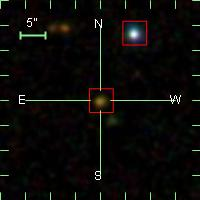 | 932 | zSNIa | 0.391335 | 28.3823 | -0.575534 | 28.382326 | -0.57554900 | |
| 986 | zSNIa | 0.280578 | 352.812 | 1.14164 | 352.81217 | 1.1417820 | ||
| 1008 | zSNIa | 0.226191 | 28.2779 | 1.11376 | 28.278193 | 1.1137550 | ||
| 1032 | SNIa | 0.129755 | 46.7959 | 1.11998 | 46.795696 | 1.1195520 | |
| 1112 | SNIa | 0.257608 | 339.017 | -0.374927 | 339.01764 | -0.37518900 | ||
| 1119 | SNIa | 0.297805 | 320.413 | 0.895200 | 320.41355 | 0.89465600 | ||
| 1158 | zSNIa | 0.411625 | 17.2762 | -0.351725 | 17.275421 | -0.35219400 | ||
| 1166 | SNIa | 0.382077 | 9.35528 | 0.973942 | 9.3556590 | 0.97327400 | ||
| 1214 | zSNIa | 0.264749 | 40.3652 | 0.973787 | 40.365166 | 0.97382200 | ||
| 1241 | SNIa | 0.0897900 | 337.671 | -0.776249 | 337.67253 | -0.77658900 | |
| 1253 | SNIa | 0.263071 | 323.799 | 0.162843 | 323.79905 | 0.16307900 | ||
| 1316 | SNIa | 0.217109 | 334.864 | 0.494165 | 334.86383 | 0.49445100 | ||
| 1354 | zSNIa | 0.249436 | 354.803 | 0.0902310 | 354.80288 | 0.089955000 | ||
| | 1371 | SNIa | 0.119343 | 349.374 | 0.429689 | 349.37382 | 0.42938400 |
| 1378 | zSNIa | 0.125837 | 25.6483 | -1.21393 | 25.649099 | -1.2131670 | ||
| 1385 | zSNIa | 0.336879 | 8.82727 | 0.0756440 | 8.8271610 | 0.075893000 | ||
| 1395 | zSNIa | 0.186404 | 357.696 | 0.429956 | 357.69648 | 0.43036300 | ||
| 1403 | zSNIa | 0.361378 | 359.704 | 0.432110 | 359.70390 | 0.43198200 | ||
| 1415 | zSNIa | 0.211864 | 6.10649 | 0.599021 | 6.1065230 | 0.59932200 | |
| 1457 | zSNIa | 0.360187 | 41.3111 | 0.578468 | 41.311382 | 0.57872000 | ||
| 1461 | zSNIa | 0.341186 | 24.3727 | 0.209655 | 24.372633 | 0.20967900 | ||
| 1464 | zSNIa | 0.290028 | 26.3935 | 0.150945 | 26.393475 | 0.15081400 | ||
| 1478 | zSNIa | 0.201959 | 32.7812 | 0.147316 | 32.781307 | 0.14711200 | ||
| 1504 | zSNIa | 0.317369 | 40.0064 | 0.204983 | 40.006382 | 0.20516200 | ||
| 1576 | zSNIa | 0.476722 | 43.2807 | 0.555010 | 43.280613 | 0.55553000 | ||
| 1580 | SNIa | 0.184000 | 45.3238 | -0.642276 | 45.323063 | -0.64406600 | ||
| 1595 | zSNIa | 0.213600 | 321.568 | -0.553924 | 321.56790 | -0.55405500 | |
| 1650 | zSNIa | 0.304341 | 353.510 | 0.683732 | 353.51105 | 0.68333800 | ||
| 1658 | zSNIa | 0.277296 | 357.505 | 0.649901 | 357.50455 | 0.65015700 | |
| 1686 | SNIa? | 0.136400 | 2.24897 | -0.210912 | 2.2483470 | -0.21037000 | ||
| 1688 | SNIa | 0.359161 | 321.358 | 0.324875 | 321.35775 | 0.32454300 | ||
| 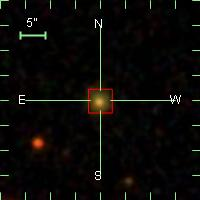 | 1740 | zSNIa | 0.167636 | 5.40440 | -0.880933 | 5.4044030 | -0.88089800 | |
| 1748 | zSNIa | 0.339527 | 353.112 | -0.482221 | 353.11216 | -0.48247700 | ||
| 1750 | zSNIa | 0.259970 | 354.395 | -0.475900 | 354.39421 | -0.47583200 | ||
| 1775 | zSNIa | 0.303881 | 318.993 | -1.00961 | 318.99338 | -1.0094380 | ||
| 1794 | SNIa | 0.141910 | 317.837 | -0.445389 | 317.83682 | -0.44533300 | ||
| 1825 | zSNIa | 0.156311 | 316.820 | 0.358983 | 316.82069 | 0.35940400 | ||
| 1835 | zSNIa | 0.271600 | 312.664 | 1.07184 | 312.66410 | 1.0718330 | ||
| 1978 | zSNIa | 0.298028 | 334.232 | 0.994823 | 334.23190 | 0.99483600 | ||
| 1979 | zSNIa | 0.286893 | 334.356 | 0.944602 | 334.35616 | 0.94475600 | ||
| 1991 | zSNIa | 0.315484 | 339.627 | 0.908172 | 339.62662 | 0.90828900 | ||
| 2017 | SNIa | 0.263088 | 328.944 | 0.593471 | 328.94334 | 0.59351800 | |
| 2030 | SNIa | 0.233600 | 311.842 | -1.25330 | 311.84158 | -1.2532820 | ||
| 2031 | SNIa | 0.153000 | 312.043 | -1.17135 | 312.04319 | -1.1714220 | |
| 2041 | zSNIa | 0.209821 | 320.151 | -1.20917 | 320.15152 | -1.2090680 | ||
| 2064 | zSNIa | 0.456693 | 323.031 | -0.346196 | 323.03148 | -0.34620700 | |
| 2078 | zSNIa | 0.323773 | 336.714 | -1.07998 | 336.71391 | -1.0797440 | ||
| 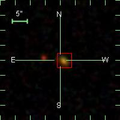 | 2079 | zSNIa | 0.306576 | 336.807 | -1.06775 | 336.80662 | -1.0677180 | |
| 2081 | zSNIa | 0.251664 | 337.305 | -1.20782 | 337.30515 | -1.2078180 | ||
| 2102 | SNIa | 0.0951000 | 312.221 | 0.191625 | 312.22095 | 0.19113500 | ||
| 2149 | zSNIa | 0.295639 | 17.4472 | -0.588812 | 17.447865 | -0.58845400 | ||
| 2162 | zSNIa | 0.172700 | 15.4429 | -0.133740 | 15.442513 | -0.13358100 | |
| 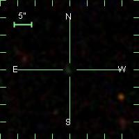 | 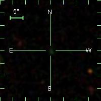 | 2165 | SNIa | 0.288000 | 17.0915 | -0.0963150 | 17.091730 | -0.096247000 |
| 2181 | zSNIa | 0.378640 | 20.1630 | -0.00756800 | 20.163042 | -0.0075810000 | ||
| 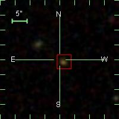 | 2235 | zSNIa | 0.347842 | 18.8855 | -0.925051 | 18.885868 | -0.92487500 | |
| 2246 | SNIa | 0.194900 | 50.0905 | -0.884806 | 50.090420 | -0.88559300 | ||
| 2280 | zSNIa | 0.350224 | 341.490 | 0.281319 | 341.48915 | 0.28132800 | ||
| 2290 | zSNIa | 0.330463 | 12.3777 | 0.265411 | 12.377670 | 0.26518600 | ||
| 2308 | SNIa | 0.148000 | NaN | NaN | 34.272865 | 0.28029800 | |
| 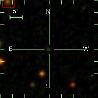 | 2319 | zSNIa | 0.159700 | 55.4654 | 0.345761 | 55.465538 | 0.34572000 | |
| 2330 | SNIa | 0.213200 | 6.80733 | 1.12086 | 6.8071230 | 1.1205980 | |
| 2335 | zSNIa | 0.184184 | 31.7000 | 1.23554 | 31.699804 | 1.2355170 | ||
| 2347 | zSNIa | 0.403882 | 324.852 | -0.505718 | 324.85168 | -0.50571400 | |
| 2372 | SNIa | 0.180465 | 40.5208 | -0.541038 | 40.520721 | -0.54085000 | ||
| 2422 | SNIa | 0.265000 | 1.99458 | 0.637986 | 1.9945330 | 0.63819500 | ||
| 2437 | zSNIa | 0.259608 | 31.1576 | 0.806624 | 31.157120 | 0.80672000 | ||
| | 2440 | SNIa | 0.191139 | 42.6339 | 0.807329 | 42.633732 | 0.80779600 |
| 2532 | zSNIa | 0.268893 | 27.7471 | -0.233908 | 27.747513 | -0.23417500 | ||
| 2533 | SNIa | 0.340000 | 31.2205 | -0.326170 | 31.220692 | -0.32646800 | ||
| 2551 | zSNIa | 0.249061 | 357.677 | -1.16425 | 357.67712 | -1.1639680 | |
| 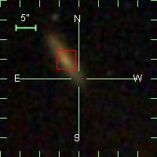 | 2561 | SNIa | 0.118129 | 46.3443 | 0.859733 | 46.343418 | 0.85835900 | |
| 2630 | zSNIa | 0.350720 | 35.2592 | -1.12008 | 35.259308 | -1.1199780 | ||
| 2632 | zSNIa | 0.296000 | 45.5896 | -1.22663 | 45.590221 | -1.2260340 | ||
| 2635 | SNIa | 0.143700 | 52.7040 | -1.23762 | 52.704308 | -1.2380760 | ||
| | 2639 | zSNIa | 0.216312 | 330.464 | 0.664479 | 330.46413 | 0.66457400 |
| 2689 | SNIa | 0.161489 | 24.9000 | -0.757933 | 24.900312 | -0.75871400 | |
| 2734 | zSNIa | 0.302800 | 48.2071 | -0.694779 | 48.206959 | -0.69479500 | ||
| 2766 | zSNIa | 0.149937 | 52.7116 | -0.618581 | 52.711136 | -0.61883300 | ||
| 2784 | zSNIa | 0.399991 | 28.0755 | -0.0412740 | 28.075428 | -0.041606000 | ||
| 2789 | SNIa | 0.290479 | 344.202 | 0.400570 | 344.20146 | 0.40110900 | ||
| 2799 | zSNIa | 0.376920 | 30.2591 | 0.347030 | 30.259115 | 0.34712400 | ||
| 2808 | zSNIa | 0.314100 | 51.4592 | 0.292365 | 51.459473 | 0.29222800 | |
| 2855 | zSNIa | 0.245075 | 16.1754 | -0.356281 | 16.175241 | -0.35635200 | ||
| 2864 | zSNIa | 0.244100 | 359.451 | -1.23961 | 359.45098 | -1.2395600 | ||
| 2871 | zSNIa | 0.292252 | 9.34770 | -1.08668 | 9.3477500 | -1.0866500 | ||
| 2916 | SNIa | 0.124200 | 315.922 | 0.569533 | 315.92172 | 0.56956600 | ||
| 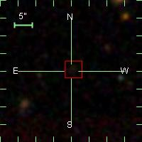 | 2926 | zSNIa | 0.304287 | 4.20276 | 0.428438 | 4.2028510 | 0.42821900 |
| 2943 | SNIa | 0.265400 | NaN | NaN | 17.704947 | 1.0079360 | |
| 2992 | SNIa | 0.126604 | 55.4973 | -0.782922 | 55.497040 | -0.78265500 | |
| 3065 | zSNIa | 0.155771 | 336.978 | -1.15487 | 336.97770 | -1.1551700 | |
| 3077 | zSNIa | 0.245500 | 329.044 | 0.215495 | 329.04386 | 0.21537300 | ||
| 3080 | SNIa | 0.174404 | 16.9317 | -1.03948 | 16.932343 | -1.0394950 | |
| | 3087 | SNIa | 0.165510 | 20.4066 | -0.977155 | 20.406706 | -0.97723600 |
| 3150 | zSNIa | 0.333268 | 334.512 | -0.631539 | 334.51217 | -0.63161600 | ||
| 3161 | zSNIa | 0.371513 | 318.744 | 1.13674 | 318.74365 | 1.1367300 | |
| 3172 | zSNIa | 0.316958 | 335.669 | -0.636512 | 335.66922 | -0.63645900 | |
| 3175 | zSNIa | 0.221110 | 44.6174 | -0.970598 | 44.617329 | -0.97052400 | ||
| 3180 | zSNIa | 0.246952 | 7.11178 | 0.312010 | 7.1117480 | 0.31205100 | ||
| 3195 | zSNIa | 0.300000 | 8.66859 | 0.244377 | 8.6683910 | 0.24431500 | |
| 3199 | SNIa | 0.251100 | NaN | NaN | 333.29273 | 1.0505380 | |
| 3206 | zSNIa | 0.417071 | 13.5774 | 0.418092 | 13.577491 | 0.41825700 | ||
| 3225 | zSNIa | 0.341914 | 23.3811 | 0.311227 | 23.381372 | 0.31128800 | |
| 3241 | SNIa? | 0.259082 | 312.653 | -0.354234 | 312.65146 | -0.35408900 | ||
| 3256 | SNIa | 0.108225 | 329.267 | -0.223458 | 329.26770 | -0.22348700 | |
| 3317 | SNIa | 0.161011 | 26.9627 | 0.640420 | 26.962612 | 0.64060000 | |
| 3331 | SNIa? | 0.213123 | 34.5606 | 0.795943 | 34.561394 | 0.79655100 | ||
| 3341 | zSNIa | 0.431112 | 39.6106 | 0.787606 | 39.609795 | 0.78715300 | ||
| 3368 | zSNIa | 0.377482 | 44.4561 | 1.23079 | 44.455967 | 1.2308580 | ||
| 3377 | SNIa | 0.245100 | 54.1562 | 1.07883 | 54.156151 | 1.0791690 | |
| 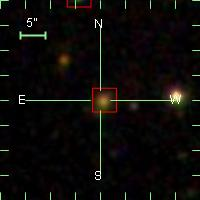 | 3426 | zSNIa | 0.232672 | 341.900 | 0.615525 | 341.89974 | 0.61537800 | |
| 3451 | SNIa | 0.249841 | 334.069 | 0.707809 | 334.06924 | 0.70813000 | |
| 3452 | SNIa | 0.231138 | 334.671 | 0.639508 | 334.67150 | 0.63918800 | ||
| 3475 | zSNIa | 0.301106 | 0.523595 | -0.150687 | 0.52339000 | -0.15064400 | ||
| 3479 | zSNIa | 0.253849 | 9.61493 | -0.167725 | 9.6148950 | -0.16758200 | ||
| 3480 | zSNIa | 0.175025 | 14.0789 | -0.152574 | 14.078904 | -0.15247900 | ||
| 3488 | zSNIa | 0.160000 | 313.555 | -1.01035 | 313.55521 | -1.0103370 | |
| 3508 | zSNIa | 0.496700 | 15.8238 | -0.179041 | 15.823817 | -0.17900800 | ||
| 3527 | zSNIa | 0.419931 | 37.4265 | -0.160717 | 37.426495 | -0.16086300 | |
| 3532 | zSNIa | 0.182169 | 42.4724 | -0.0982340 | 42.472576 | -0.098823000 | |
| 3535 | zSNIa | 0.308446 | 44.1177 | -0.133582 | 44.117222 | -0.13347600 | ||
| 3565 | zSNIa | 0.289763 | 2.59037 | 0.709972 | 2.5877090 | 0.70931000 | ||
| 3592 | SNIa | 0.0865780 | 19.0529 | 0.790555 | 19.052437 | 0.79193700 | |
| 3593 | zSNIa | 0.356470 | 19.6166 | 0.732278 | 19.616556 | 0.73231900 | ||
| 3644 | zSNIa | 0.215616 | 24.8154 | 1.10899 | 24.815243 | 1.1090010 | ||
| 3780 | zSNIa | 0.361973 | 5.54306 | 0.541103 | 5.5431370 | 0.54123300 | ||
| 3811 | zSNIa | 0.419444 | 13.7045 | 0.429592 | 13.704592 | 0.42961800 | ||
| 3825 | zSNIa | 0.313434 | 17.4705 | 0.605292 | 17.470449 | 0.60535300 | ||
| 3881 | zSNIa | 0.327784 | 351.882 | -0.443070 | 351.88169 | -0.44174400 | ||
| 3887 | zSNIa | 0.298629 | 10.9435 | 0.0742800 | 10.943247 | 0.074282000 | ||
| 3889 | zSNIa | 0.229297 | 7.68887 | -0.438073 | 7.6889100 | -0.43839000 | ||
| 3901 | SNIa | 0.0628610 | 14.8504 | 0.00262400 | 14.850435 | 0.0025950000 | ||
| 3945 | zSNIa | 0.262001 | 346.010 | -0.283115 | 346.00917 | -0.28299900 | ||
| 3959 | zSNIa | 0.183300 | 45.0979 | 0.511986 | 45.097855 | 0.51190800 | |
| 3975 | zSNIa | 0.393544 | 29.8209 | 0.204101 | 29.821054 | 0.20370700 | ||
| 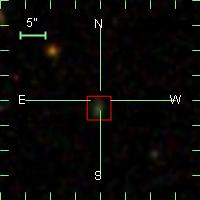 | 3983 | zSNIa | 0.308008 | 7.27593 | -0.256967 | 7.2758790 | -0.25655700 | |
| 4000 | SNIa | 0.277701 | 31.0167 | -0.366323 | 31.016014 | -0.36582800 | ||
| 4019 | zSNIa | 0.181404 | 1.26189 | 1.14640 | 1.2617940 | 1.1454110 | |
| 4028 | zSNIa | 0.345246 | 11.0140 | 1.24256 | 11.014022 | 1.2425850 | ||
| 4035 | zSNIa | 0.427714 | 21.4673 | 1.04788 | 21.467310 | 1.0475850 | ||
| 4046 | SNIa | 0.277000 | 354.498 | 0.642195 | 354.49831 | 0.64210600 | ||
| 4048 | zSNIa | 0.434924 | 5.91490 | 0.782879 | 5.9151930 | 0.78343400 | ||
| 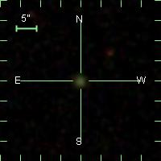 | 4059 | zSNIa | 0.303700 | 54.6502 | 0.145751 | 54.650002 | 0.14586700 | |
| 4079 | zSNIa | 0.371731 | 29.2067 | 0.754265 | 29.206696 | 0.75414500 | ||
| 4110 | zSNIa | 0.373667 | 1.65823 | -1.19649 | 1.6583720 | -1.1967810 | ||
| 4175 | zSNIa | 0.279179 | 33.1729 | -1.17544 | 33.173363 | -1.1752640 | ||
| 4181 | zSNIa | 0.289167 | 37.8181 | -1.13076 | 37.817799 | -1.1309380 | ||
| 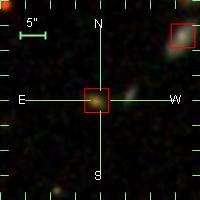 | 4206 | zSNIa | 0.290675 | 354.577 | -0.486516 | 354.57717 | -0.48646900 | |
| 4211 | zSNIa | 0.250225 | 0.508948 | -0.531419 | 0.50912900 | -0.53131700 | ||
| 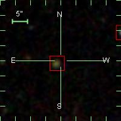 | 4236 | zSNIa | 0.344426 | 1.90611 | -1.01857 | 1.9057210 | -1.0183400 | |
| 4240 | zSNIa | 0.467156 | 10.2601 | -0.879290 | 10.260051 | -0.87896700 | ||
| 4241 | SNIa | 0.332000 | 12.2376 | -0.905509 | 12.237703 | -0.90574000 | ||
| 4304 | zSNIa | 0.212655 | 27.2367 | 0.989140 | 27.236534 | 0.98945000 | ||
| 4307 | zSNIa | 0.272000 | 29.9625 | 0.949683 | 29.962536 | 0.94968500 | ||
| 4311 | zSNIa | 0.296289 | 32.1308 | 1.01988 | 32.130970 | 1.0199640 | ||
| 4313 | zSNIa | 0.391890 | 36.1503 | 1.03475 | 36.150360 | 1.0348000 | |
| 4417 | zSNIa | 0.362084 | 10.1978 | -0.428905 | 10.198165 | -0.42905300 | ||
| 4524 | SNIa | 0.0616000 | 45.3000 | -0.553864 | 45.299786 | -0.55386500 | ||
| 4530 | zSNIa | 0.296000 | 48.9620 | -0.465665 | 48.961990 | -0.46568700 | ||
| 4547 | zSNIa | 0.441182 | 24.0846 | 0.313921 | 24.084579 | 0.31387600 | ||
| 4572 | zSNIa | 0.384125 | 36.2686 | 0.396068 | 36.268543 | 0.39612000 | ||
| 4577 | SNIa? | 0.363000 | 38.4758 | 0.280881 | 38.475533 | 0.28071700 | ||
| 4578 | zSNIa | 0.413618 | 38.5967 | 0.311344 | 38.596668 | 0.31138900 | ||
| 4612 | zSNIa | 0.394945 | 13.5071 | -0.837061 | 13.507057 | -0.83723300 | ||
| 4639 | zSNIa | 0.365265 | 29.3576 | -0.757283 | 29.357620 | -0.75728200 | ||
| 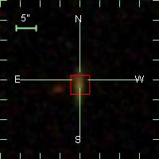 | 4651 | zSNIa | 0.151605 | 37.3757 | -0.747575 | 37.375721 | -0.74719200 | |
| 4669 | zSNIa | 0.142000 | 18.4081 | -0.966532 | 18.408148 | -0.96648500 | ||
| 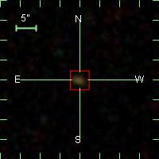 | 4676 | zSNIa | 0.245025 | 18.8237 | 0.788292 | 18.823689 | 0.78820500 | |
| 4679 | SNIa | 0.332400 | 21.5283 | 0.676942 | 21.528351 | 0.67685800 | ||
| 4682 | zSNIa | 0.402323 | 21.5510 | 0.810790 | 21.550665 | 0.81096900 | ||
| 4737 | zSNIa | 0.465436 | 29.2455 | -0.938403 | 29.245537 | -0.93838500 | ||
| 4757 | zSNIa | 0.436471 | 34.1468 | -1.01567 | 34.146751 | -1.0156750 | ||
| 4779 | zSNIa | 0.535360 | 18.9487 | 0.263520 | 18.948866 | 0.26359600 | ||
| 4857 | zSNIa | 0.516965 | 22.8792 | -0.155112 | 22.879143 | -0.15510900 | ||
| 4969 | zSNIa | 0.306777 | 346.368 | -0.471615 | 346.36760 | -0.47173200 | ||
| 4978 | zSNIa | 0.282200 | 350.660 | -0.429148 | 350.66045 | -0.42911200 | ||
| 5103 | SNIa | 0.161989 | 359.884 | 0.736856 | 359.88445 | 0.73716500 | |
| 5183 | SNIa | 0.389800 | 53.4537 | 0.709379 | 53.454021 | 0.70935100 | ||
| 5199 | zSNIa | 0.221952 | 348.792 | -0.994756 | 348.79245 | -0.99487000 | |
| 5209 | zSNIa | 0.284278 | 359.913 | -1.01635 | 359.91338 | -1.0162470 | |
| 5230 | zSNIa | 0.322057 | 334.793 | 0.838801 | 334.79260 | 0.83865400 | ||
| 5235 | zSNIa | 0.252225 | 337.224 | 0.636171 | 337.22431 | 0.63625500 | |
| 5340 | zSNIa | 0.193700 | 307.021 | -0.273060 | 307.02131 | -0.27303200 | ||
| 5350 | SNIa | 0.175400 | 307.219 | -0.779830 | 307.21917 | -0.77922900 | ||
| 5378 | zSNIa | 0.251100 | 37.7371 | -1.25212 | 37.736862 | -1.2521400 | ||
| 5391 | SNIa | 0.300900 | 52.3423 | -1.09525 | 52.341984 | -1.0947040 | ||
| 5395 | SNIa | 0.117000 | 49.6409 | 0.123345 | 49.640949 | 0.12334100 | ||
| 5473 | zSNIa | 0.277140 | 354.737 | 0.383358 | 354.73668 | 0.38349800 | |
| 5486 | zSNIa | 0.229587 | 333.248 | -0.411607 | 333.24805 | -0.41201500 | |
| 5533 | SNIa | 0.220282 | 328.670 | 0.412789 | 328.66995 | 0.41343000 | ||
| 5549 | SNIa | 0.121242 | 3.24994 | 0.248559 | 3.2505350 | 0.24822300 | |
| | 5550 | SNIa | 0.156291 | 3.59850 | 0.333176 | 3.5982910 | 0.33305200 |
| 5588 | SNIa | 0.411141 | 2.36829 | 1.15446 | 2.3686140 | 1.1549350 | ||
| 5590 | zSNIa | 0.447846 | 356.673 | -0.872781 | 356.67268 | -0.87278800 | ||
| 5635 | SNIa | 0.179790 | 333.183 | -0.0350770 | 333.18276 | -0.034922000 | |
| 5659 | zSNIa | 0.490901 | 352.641 | -0.0385600 | 352.64134 | -0.038533000 | ||
| | 5689 | zSNIa | 0.171207 | 357.883 | 0.827541 | 357.88302 | 0.82754400 |
| 5690 | zSNIa | 0.222458 | 11.7872 | -0.913065 | 11.787070 | -0.91320000 | |
| 5691 | zSNIa | 0.285848 | 6.15230 | -0.168319 | 6.1523940 | -0.16814900 | ||
| 5717 | SNIa | 0.251700 | 17.8960 | -0.00594900 | 17.895966 | -0.0058960000 | ||
| 5736 | SNIa | 0.253000 | 22.8618 | -0.632342 | 22.862734 | -0.63161800 | ||
| 5737 | SNIa | 0.393000 | 22.8572 | -0.603343 | 22.857040 | -0.60338400 | ||
| 5751 | SNIa | 0.130555 | 11.6344 | 0.838165 | 11.634153 | 0.83821500 | |
| 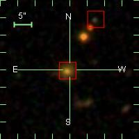 | 5776 | zSNIa | 0.238652 | 328.514 | -0.308434 | 328.51359 | -0.30838700 | |
| 5802 | zSNIa | 0.300656 | 328.145 | 0.845699 | 328.14501 | 0.84572800 | ||
| 5803 | zSNIa | 0.687529 | 335.980 | 0.932328 | 335.97996 | 0.93227600 | ||
| 5807 | zSNIa | 0.195487 | 341.583 | 1.00884 | 341.58263 | 1.0087990 | ||
| 5821 | SNIa? | 0.400800 | NaN | NaN | 312.58242 | -0.82527200 | |
| 5844 | SNIa | 0.310800 | NaN | NaN | 327.78619 | -0.84293600 | |
| 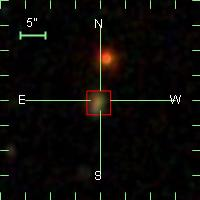 | 5859 | zSNIa | 0.240003 | 18.5699 | -0.646802 | 18.569780 | -0.64671000 |
| 5869 | zSNIa | 0.158377 | 27.3707 | -0.777324 | 27.370417 | -0.77686800 | |
| 5890 | zSNIa | 0.179972 | 332.516 | 0.609689 | 332.51562 | 0.60920200 | ||
| 5897 | zSNIa | 0.368966 | 38.1641 | -0.804137 | 38.163887 | -0.80395400 | ||
| 5909 | zSNIa | 0.347576 | 17.4849 | -1.19412 | 17.485146 | -1.1941400 | ||
| | 5916 | SNIa? | 0.174074 | 5.43714 | -0.324987 | 5.4373670 | -0.32499300 |
| 5917 | zSNIa | 0.296412 | 6.03734 | -0.255547 | 6.0369080 | -0.25506500 | ||
| 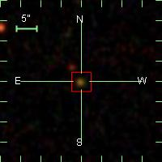 | 5925 | zSNIa | 0.396531 | 26.1625 | -1.14616 | 26.162468 | -1.1460170 | |
| 5944 | SNIa | 0.0459150 | 29.2021 | -0.212567 | 29.199791 | -0.21372000 | ||
| 5957 | SNIa | 0.280304 | 34.7598 | -0.272579 | 34.760574 | -0.27283900 | ||
| 5959 | zSNIa | 0.207705 | 38.0596 | -0.308064 | 38.059853 | -0.30810900 | ||
| 5963 | zSNIa | 0.236918 | 11.0809 | 0.479744 | 11.081015 | 0.47948400 | |
| 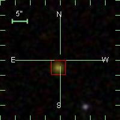 | 5966 | SNIa | 0.309632 | 16.1905 | 0.513275 | 16.190392 | 0.51391700 | |
| 5978 | zSNIa | 0.280661 | 26.1624 | 0.921914 | 26.162395 | 0.92188000 | ||
| 5993 | zSNIa | 0.377678 | 29.6823 | 0.0489400 | 29.682430 | 0.049065000 | ||
| 5994 | SNIa | 0.187000 | NaN | NaN | 312.60255 | -0.16788900 | |
| | 6057 | SNIa | 0.0670720 | 52.5537 | -0.974474 | 52.553604 | -0.97458600 |
| 6100 | SNIa | 0.317700 | 333.483 | 1.08616 | 333.48314 | 1.0864880 | ||
| 6108 | SNIa | 0.259500 | 1.80654 | 0.349108 | 1.8065970 | 0.34898500 | ||
| 6120 | zSNIa | 0.470141 | 333.144 | -0.0576130 | 333.14341 | -0.057328000 | |
| 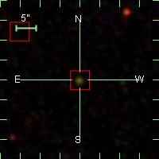 | 6121 | zSNIa | 0.356765 | 27.0024 | 0.304326 | 27.002605 | 0.30428900 | |
| 6127 | SNIa | 0.288590 | 337.325 | -0.0921640 | 337.32398 | -0.092354000 | ||
| 6137 | SNIa | 0.300100 | NaN | NaN | 307.93612 | 0.24475700 | |
| 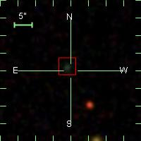 | 6192 | SNIa | 0.272471 | 348.465 | 1.25730 | 348.46499 | 1.2569880 | |
| 6196 | SNIa | 0.281345 | 337.631 | -0.502403 | 337.63116 | -0.50266200 | ||
| 6216 | zSNIa | 0.175564 | 344.996 | -0.444455 | 344.99576 | -0.44431900 | ||
| 6225 | zSNIa | 0.337597 | 0.287583 | -1.00024 | 0.28753500 | -1.0003360 | ||
| 6249 | SNIa | 0.295061 | 3.26564 | -0.620253 | 3.2655530 | -0.62011800 | |
| 6274 | zSNIa | 0.207333 | 33.1504 | 0.100889 | 33.150429 | 0.10090100 | |
| 6275 | zSNIa | 0.273259 | 34.5898 | 0.0299810 | 34.589794 | 0.029996000 | |
| 6295 | SNIa | 0.0795630 | 23.6743 | -0.604181 | 23.672979 | -0.60537800 | ||
| 6300 | zSNIa | 0.358120 | 37.4115 | -0.550028 | 37.411572 | -0.55011000 | ||
| 6304 | SNIa | 0.190934 | 26.4989 | 1.19569 | 26.497623 | 1.1959540 | |
| 6315 | SNIa | 0.267000 | 310.483 | 1.09188 | 310.48282 | 1.0919980 | ||
| | 6326 | zSNIa | 0.222800 | 312.014 | -0.808794 | 312.01427 | -0.80962800 |
| 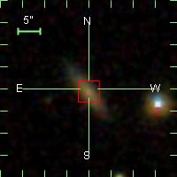 | 6406 | SNIa | 0.124488 | 46.0886 | -1.06310 | 46.088615 | -1.0629600 |
| 6422 | SNIa | 0.186455 | 349.139 | -0.663468 | 349.13880 | -0.66322400 | |
| 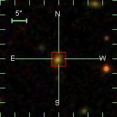 | 6431 | zSNIa | 0.255354 | 7.50855 | -0.703769 | 7.5085240 | -0.70372900 | |
| 6479 | zSNIa | 0.234549 | 320.407 | 0.583595 | 320.40732 | 0.58358400 | ||
| 6491 | zSNIa | 0.110215 | 16.6483 | 0.540726 | 16.648952 | 0.54259000 | |
| 6496 | zSNIa | 0.308800 | 311.066 | 0.0519620 | 311.06632 | 0.052029000 | ||
| 6530 | zSNIa | 0.194825 | 14.3291 | 0.0213520 | 14.329185 | 0.021384000 | ||
| 6535 | zSNIa | 0.305949 | 325.249 | 0.0532500 | 325.24908 | 0.053254000 | |
| 6556 | zSNIa | 0.258234 | 7.01577 | -1.07420 | 7.0151490 | -1.0741090 | ||
| | 6558 | SNIa | 0.0573850 | 21.7019 | -1.23812 | 21.701672 | -1.2381350 |
| 6560 | zSNIa | 0.273265 | 321.447 | 0.849880 | 321.44662 | 0.84977900 | ||
| 6638 | zSNIa | 0.325731 | 45.0386 | -1.23756 | 45.038200 | -1.2363650 | ||
| 6649 | SNIa | 0.314000 | NaN | NaN | 34.275860 | 0.53483100 | |
| 6683 | zSNIa | 0.508965 | 327.214 | 0.612582 | 327.21431 | 0.61259800 | ||
| 6687 | zSNIa | 0.395600 | 328.331 | 0.476591 | 328.33073 | 0.47700400 | ||
| 6696 | SNIa? | 0.238920 | 339.079 | 0.479647 | 339.07933 | 0.47925100 | ||
| 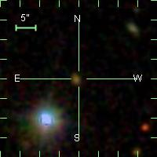 | 6699 | SNIa | 0.310600 | 322.815 | -1.05732 | 322.81498 | -1.0569850 | |
| 6709 | zSNIa | 0.280494 | 353.993 | 0.613131 | 353.99285 | 0.61366500 | ||
| 6714 | zSNIa | 0.413700 | 357.360 | 0.631881 | 357.35998 | 0.63186100 | ||
| 6743 | zSNIa | 0.362142 | 340.864 | -0.366728 | 340.86428 | -0.36667500 | ||
| 6773 | SNIa | 0.0903000 | 305.065 | 0.217361 | 305.06501 | 0.21734100 | ||
| 6777 | SNIa | 0.404300 | NaN | NaN | 321.21644 | 0.38561600 | |
| 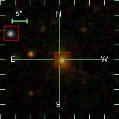 | 6780 | SNIa | 0.204064 | 328.068 | 0.269860 | 328.06861 | 0.26706200 | |
| 6807 | zSNIa | 0.295000 | 338.069 | -1.14550 | 338.06910 | -1.1455570 | ||
| 6816 | zSNIa | 0.353482 | 34.5205 | 0.112299 | 34.520535 | 0.11211400 | ||
| | 6831 | zSNIa | 0.211453 | 35.0117 | 0.721782 | 35.011189 | 0.72152500 |
| 6851 | zSNIa | 0.304822 | 52.1046 | -0.0487800 | 52.104542 | -0.048530000 | ||
| 6852 | SNIa? | 0.300600 | 53.4191 | -0.112977 | 53.419827 | -0.11211200 | |
| 6895 | zSNIa | 0.217546 | 330.193 | 0.928147 | 330.19292 | 0.92824200 | ||
| 6896 | zSNIa | 0.335040 | 330.254 | 1.01679 | 330.25374 | 1.0168410 | ||
| 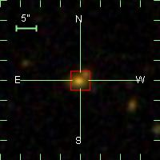 | 6903 | zSNIa | 0.253282 | 335.444 | 0.971753 | 335.44356 | 0.97176200 | |
| 6913 | zSNIa | 0.381163 | 345.250 | 1.03677 | 345.24989 | 1.0367830 | ||
| 6914 | zSNIa | 0.414257 | 317.239 | -0.780258 | 317.23957 | -0.78070500 | ||
| 6924 | SNIa | 0.328000 | NaN | NaN | 358.96933 | 0.87696600 | |
| 6933 | SNIa | 0.213000 | NaN | NaN | 11.351705 | 1.0755770 | |
| 6936 | SNIa | 0.180212 | 323.234 | -0.700057 | 323.23381 | -0.69978100 | |
| 6962 | SNIa? | 0.0942200 | 38.8608 | 1.07452 | 38.860905 | 1.0748480 | |
| 6987 | zSNIa | 0.294300 | 329.369 | 0.0698130 | 329.36845 | 0.069450000 | ||
| 7017 | SNIa | 0.269000 | 31.3654 | -0.498297 | 31.365337 | -0.49791100 | |
| 7024 | zSNIa | 0.339001 | 326.222 | -0.820614 | 326.22190 | -0.82020000 | ||
| 7051 | zSNIa | 0.333049 | 358.542 | 0.0249530 | 358.54201 | 0.025026000 | |
| 7056 | zSNIa | 0.294304 | 2.34607 | 0.136566 | 2.3460800 | 0.13661600 | ||
| 7092 | zSNIa | 0.225400 | 316.280 | 1.22068 | 316.28049 | 1.2204760 | ||
| 7099 | zSNIa | 0.218886 | 342.888 | 1.16699 | 342.88819 | 1.1673620 | |
| 7121 | zSNIa | 0.254500 | 316.321 | -0.0609580 | 316.32059 | -0.060903000 | ||
| 7143 | SNIa | 0.305137 | 345.262 | -0.206893 | 345.26236 | -0.20736700 | ||
| | 7147 | SNIa | 0.110217 | 350.019 | -0.0556020 | 350.01847 | -0.055446000 |
| 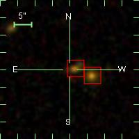 | 7194 | zSNIa | 0.364341 | 37.1608 | -0.469337 | 37.161289 | -0.46945200 | |
| 7195 | zSNIa | 0.362359 | 37.2437 | -0.533568 | 37.243660 | -0.53365700 | ||
| 7243 | SNIa | 0.204617 | 328.079 | 0.471918 | 328.07908 | 0.47193000 | ||
| 7258 | zSNIa | 0.254494 | 321.230 | -0.998710 | 321.22999 | -0.99896200 | ||
| 7335 | SNIa? | 0.196892 | 318.883 | -0.354606 | 318.88520 | -0.35534000 | ||
| 7350 | zSNIa | 0.156223 | 7.56280 | -0.787202 | 7.5635310 | -0.78708300 | ||
| 7365 | zSNIa | 0.393925 | 352.317 | 0.579817 | 352.31727 | 0.57989000 | ||
| 7373 | zSNIa | 0.280062 | 352.805 | 0.588051 | 352.80485 | 0.58829400 | ||
| 7444 | zSNIa | 0.250355 | 27.7029 | 0.429827 | 27.702923 | 0.42984100 | ||
| 7457 | zSNIa | 0.254504 | 350.903 | -0.372184 | 350.90315 | -0.37217500 | ||
| 7460 | zSNIa | 0.249447 | 323.583 | -0.681386 | 323.58406 | -0.68171200 | ||
| 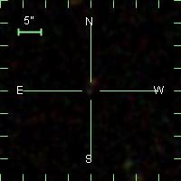 | 7473 | SNIa | 0.216000 | 4.32641 | -0.257285 | 4.3264080 | -0.25727500 | |
| 7475 | SNIa | 0.322000 | NaN | NaN | 4.7534760 | -0.28148800 | |
| 7479 | zSNIa | 0.227416 | 7.22586 | -0.409503 | 7.2258510 | -0.40947100 | ||
| 7499 | zSNIa | 0.352531 | 19.8561 | -0.235898 | 19.855942 | -0.23587400 | ||
| 7502 | zSNIa | 0.449808 | 23.1349 | -0.368813 | 23.134970 | -0.36871600 | ||
| 7512 | SNIa | 0.219000 | NaN | NaN | 52.090313 | -0.32609400 | |
| 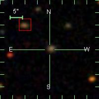 | 7527 | zSNIa | 0.237000 | 335.256 | -1.20391 | 335.25642 | -1.2041030 | |
| 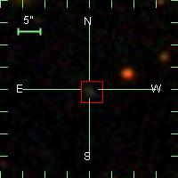 | 7550 | zSNIa | 0.162370 | 321.694 | 1.05084 | 321.69407 | 1.0508920 | |
| 7600 | zSNIa | 0.188077 | 347.614 | -1.10772 | 347.61352 | -1.1074560 | |
| 7644 | zSNIa | 0.310062 | 353.935 | 0.868303 | 353.93506 | 0.86833100 | |
| 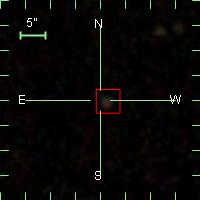 | 7647 | zSNIa | 0.386660 | 358.384 | 1.04240 | 358.38308 | 1.0420390 | |
| 7656 | zSNIa | 0.387152 | 7.75507 | 1.01092 | 7.7549100 | 1.0107670 | ||
| 7663 | zSNIa | 0.488121 | 13.1898 | 0.925336 | 13.190850 | 0.92543700 | ||
| 7680 | zSNIa | 0.378940 | 28.3850 | 0.982545 | 28.385056 | 0.98254700 | ||
| 7699 | zSNIa | 0.406559 | 6.23872 | -1.21574 | 6.2386780 | -1.2156900 | ||
| 7701 | zSNIa | 0.360618 | 6.51724 | -1.22914 | 6.5169680 | -1.2287810 | ||
| 7707 | zSNIa | 0.211670 | 8.78030 | -1.19041 | 8.7798730 | -1.1896080 | ||
| 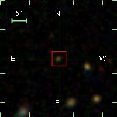 | 7717 | zSNIa | 0.332633 | 14.4405 | -1.23235 | 14.440578 | -1.2325190 | |
| 7721 | zSNIa | 0.302000 | 20.2410 | -1.11811 | 20.241055 | -1.1181380 | |
| 7779 | SNIa | 0.381200 | 310.080 | -0.00635100 | 310.08022 | -0.0071780000 | ||
| 7802 | zSNIa | 0.407556 | 345.575 | 0.729391 | 345.57601 | 0.72924600 | ||
| 7824 | zSNIa | 0.287100 | 348.813 | -0.0808080 | 348.81307 | -0.080785000 | ||
| 7835 | zSNIa | 0.156922 | 1.45813 | -0.0805710 | 1.4582420 | -0.080553000 | ||
| 7841 | zSNIa | 0.428635 | 10.3119 | -0.0512820 | 10.311982 | -0.051393000 | ||
| 7847 | SNIa | 0.212659 | 32.4597 | -0.0617040 | 32.459949 | -0.061799000 | ||
| 7857 | zSNIa | 0.371262 | 335.278 | 1.18519 | 335.27801 | 1.1851480 | ||
| 7876 | SNIa | 0.0760230 | 19.1828 | 0.793639 | 19.182510 | 0.79462800 | |
| 7882 | zSNIa | 0.335924 | 17.0543 | 0.173244 | 17.054274 | 0.17328700 | ||
| 7884 | zSNIa | 0.441372 | 21.7675 | 0.123510 | 21.767445 | 0.12347000 | ||
| 7919 | zSNIa | 0.319315 | 28.7395 | -0.972425 | 28.739658 | -0.97256800 | ||
| 7939 | zSNIa | 0.142024 | 27.4953 | 1.20038 | 27.495625 | 1.2004380 | ||
| 7947 | SNIa? | 0.368000 | 314.185 | 0.408251 | 314.18608 | 0.40835100 | ||
| 7954 | zSNIa | 0.255300 | 332.677 | 0.347815 | 332.67701 | 0.34778800 | ||
| 8004 | zSNIa | 0.351569 | 347.529 | -0.558048 | 347.52852 | -0.55803600 | ||
| 8030 | SNIa | 0.422000 | NaN | NaN | 40.208828 | 0.99315200 | |
| 8046 | SNIa | 0.258570 | 39.1177 | 0.511843 | 39.116806 | 0.51127300 | ||
| 8062 | zSNIa | 0.554141 | 347.978 | 0.0772470 | 347.97701 | 0.077084000 | ||
| 8114 | zSNIa | 0.371314 | 352.217 | 0.228564 | 352.21666 | 0.22844200 | ||
| 8128 | zSNIa | 0.439722 | 8.15922 | -0.823062 | 8.1593580 | -0.82297800 | ||
| 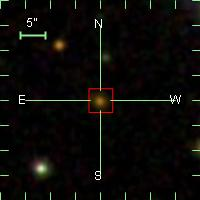 | 8138 | zSNIa | 0.397867 | 11.4669 | 0.378357 | 11.466677 | 0.37814600 | |
| 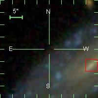 | 8151 | SNIa | 0.0130040 | 6.95720 | -1.19999 | 6.9620060 | -1.1981510 | |
| 8160 | zSNIa | 0.408152 | 33.7652 | -1.10051 | 33.765141 | -1.1004700 | ||
| 8165 | zSNIa | 0.319000 | 50.2258 | -1.10947 | 50.225433 | -1.1093580 | ||
| 8195 | zSNIa | 0.268761 | 331.006 | -0.895671 | 331.00643 | -0.89558500 | ||
| 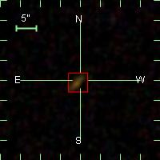 | 8213 | SNIa | 0.186112 | 357.521 | -0.921528 | 357.52093 | -0.92137900 | |
| 8216 | zSNIa | 0.291349 | 331.269 | -0.0520920 | 331.26950 | -0.052210000 | ||
| | 8254 | zSNIa | 0.189195 | 351.164 | 0.819967 | 351.16388 | 0.81986300 |
| 8264 | zSNIa | 0.237519 | 357.539 | 0.820127 | 357.53939 | 0.82007500 | ||
| 8276 | zSNIa | 0.472000 | 46.9224 | 1.25385 | 46.922482 | 1.2540250 | ||
| 8280 | zSNIa | 0.184833 | 8.57313 | 0.795555 | 8.5738010 | 0.79602800 | ||
| 8307 | zSNIa | 0.436080 | 36.6051 | 0.790793 | 36.604515 | 0.79070500 | ||
| 8351 | zSNIa | 0.381125 | 12.1122 | 1.25423 | 12.112068 | 1.2543430 | ||
| 8421 | zSNIa | 0.479268 | 14.5180 | -0.934102 | 14.517962 | -0.93407100 | ||
| 8495 | SNIa | 0.214981 | 335.261 | -0.748400 | 335.26104 | -0.74815900 | ||
| | 8555 | zSNIa | 0.197704 | 2.91561 | -0.415045 | 2.9155220 | -0.41488700 |
| 8598 | SNIa | 0.361196 | 42.6675 | -0.0667240 | 42.667336 | -0.065960000 | ||
| 8600 | zSNIa | 0.437935 | 44.2709 | -0.0921150 | 44.270760 | -0.092432000 | ||
| 8651 | zSNIa | 0.412585 | 28.7489 | -0.522891 | 28.748981 | -0.52284200 | ||
| 8662 | zSNIa | 0.558160 | 37.4434 | -0.482813 | 37.444065 | -0.48193200 | ||
| 8675 | zSNIa | 0.496475 | 11.1226 | 0.421228 | 11.122484 | 0.42120800 | ||
| 8700 | zSNIa | 0.423438 | 35.1095 | 0.227173 | 35.109695 | 0.22714400 | ||
| 8705 | zSNIa | 0.394218 | 40.4329 | 0.268891 | 40.433201 | 0.26881200 | ||
| 8707 | SNIa? | 0.395100 | 41.2361 | 0.203525 | 41.236153 | 0.20362000 | ||
| | 8719 | SNIa | 0.117566 | 7.72192 | -0.718631 | 7.7214810 | -0.71884800 |
| 8730 | zSNIa | 0.470738 | 32.2744 | -0.680316 | 32.274532 | -0.68030700 | ||
| 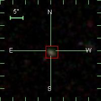 | 8742 | zSNIa | 0.215368 | 11.2394 | 0.437082 | 11.239533 | 0.43721600 | |
| 8793 | zSNIa | 0.436230 | 11.9378 | -0.564565 | 11.937743 | -0.56458500 | ||
| 8888 | zSNIa | 0.398215 | 5.16571 | 0.320808 | 5.1657490 | 0.32052200 | ||
| 8921 | SNIa | 0.145387 | 325.002 | -0.00806900 | 325.00200 | -0.0079250000 | ||
| 9020 | zSNIa | 0.377698 | 347.115 | -0.919879 | 347.11479 | -0.92012200 | ||
| 9032 | SNIa | 0.254000 | 337.884 | -0.493653 | 337.88457 | -0.49357700 | ||
| 9045 | SNIa | 0.390984 | 347.837 | -0.608584 | 347.83714 | -0.60863600 | |
| 9102 | zSNIa | 0.171605 | 336.481 | 0.521684 | 336.48091 | 0.52177300 | ||
| 9109 | zSNIa | 0.281658 | 26.3892 | 0.850863 | 26.389090 | 0.85071100 | ||
| 9133 | zSNIa | 0.267374 | 16.6425 | 0.460580 | 16.642492 | 0.46088900 | ||
| 9155 | zSNIa | 0.305679 | 327.355 | -0.784497 | 327.35444 | -0.78469800 | |
| 9207 | SNIa | 0.350268 | 19.0834 | -0.807439 | 19.083632 | -0.80780100 | ||
| 9324 | zSNIa | 0.378093 | 343.823 | 0.806571 | 343.82312 | 0.80649900 | ||
| 9326 | zSNIa | 0.350000 | 344.316 | 0.628187 | 344.31626 | 0.62845500 | ||
| 9334 | zSNIa | 0.382575 | 346.993 | 0.842470 | 346.99306 | 0.84173400 | ||
| 9424 | zSNIa | 0.217237 | 334.339 | 0.0966720 | 334.33979 | 0.097513000 | ||
| 9457 | SNIa | 0.258229 | 335.815 | 0.253695 | 335.81436 | 0.25303600 | ||
| | 9467 | SNIa | 0.220272 | 328.951 | 1.18130 | 328.95139 | 1.1807920 |
| 9557 | zSNIa | 0.375758 | 30.0498 | 0.0255330 | 30.049776 | 0.025407000 | ||
| 9558 | zSNIa | 0.390578 | 15.9844 | 0.380994 | 15.984955 | 0.38133300 | ||
| 9594 | zSNIa | 0.298235 | 17.7144 | 0.121659 | 17.714281 | 0.12168000 | ||
| 9633 | zSNIa | 0.195643 | 33.9186 | 1.09523 | 33.918289 | 1.0952410 | ||
| 9704 | zSNIa | 0.294362 | 354.329 | -0.564246 | 354.32943 | -0.56424000 | ||
| 9740 | zSNIa | 0.238000 | 323.897 | -1.02858 | 323.89703 | -1.0285520 | ||
| 9817 | zSNIa | 0.224795 | 5.03787 | 0.598161 | 5.0379660 | 0.59820300 | ||
| 9954 | zSNIa | 0.228429 | 6.58385 | -0.425989 | 6.5840850 | -0.42542900 | ||
| 9962 | zSNIa | 0.325121 | 351.293 | -0.308109 | 351.29221 | -0.30850700 | ||
| | 10028 | SNIa? | 0.0653920 | 17.7419 | 0.276128 | 17.741856 | 0.27625300 |
| 10037 | zSNIa | 0.253816 | 319.504 | 1.11530 | 319.50443 | 1.1153390 | ||
| 10066 | zSNIa | 0.442393 | 324.003 | -0.0541050 | 324.00341 | -0.054083000 | ||
| 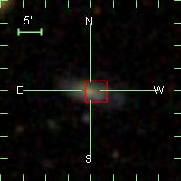 | 10096 | SNIa | 0.0776490 | 29.4296 | -0.179425 | 29.429281 | -0.17945200 | |
| 10106 | SNIa? | 0.147600 | 47.6934 | -0.204858 | 47.693260 | -0.20488200 | ||
| 10146 | zSNIa | 0.284241 | 25.7791 | 1.25127 | 25.779219 | 1.2513400 | ||
| 10299 | zSNIa | 0.261248 | 342.264 | 0.993496 | 342.26413 | 0.99355200 | ||
| 10324 | zSNIa | 0.251725 | 336.618 | 0.586837 | 336.61763 | 0.58681600 | |
| 10434 | SNIa | 0.104161 | 329.957 | -1.19242 | 329.95591 | -1.1937120 | ||
| 10449 | SNIa | 0.242027 | 337.029 | -1.12837 | 337.02863 | -1.1281780 | ||
| 10450 | zSNIa | 0.272000 | 337.275 | -1.12864 | 337.27562 | -1.1286650 | ||
| 10460 | zSNIa | 0.220342 | 345.029 | -1.20384 | 345.02911 | -1.2038890 | |
| 10550 | SNIa | 0.300813 | 349.676 | -1.20467 | 349.67540 | -1.2048820 | ||
| 10559 | zSNIa | 0.281092 | 354.117 | -1.22660 | 354.11653 | -1.2265240 | ||
| 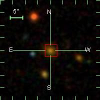 | 10690 | zSNIa | 0.312052 | 347.500 | 1.08222 | 347.49982 | 1.0822080 | |
| 10805 | SNIa | 0.0452480 | 344.928 | -0.0135730 | 344.92753 | -0.013730000 | ||
| 10843 | zSNIa | 0.351000 | 53.4526 | 0.0992370 | 53.452557 | 0.099235000 | ||
| 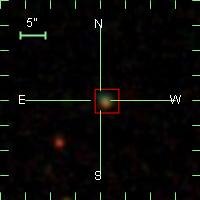 | 11026 | zSNIa | 0.284202 | 325.807 | 0.890983 | 325.80654 | 0.89109100 | |
| 11067 | SNIa | 0.117758 | 33.5187 | -0.239030 | 33.518394 | -0.23917800 | ||
| 11120 | zSNIa | 0.107264 | 325.459 | 0.369269 | 325.45676 | 0.37036100 | ||
| 11156 | zSNIa | 0.309079 | 24.0938 | -0.871754 | 24.093843 | -0.87164800 | ||
| | 11172 | zSNIa | 0.136329 | 322.413 | -0.202203 | 322.41269 | -0.20224300 |
| 11181 | zSNIa | 0.343940 | 357.022 | -0.143349 | 357.02157 | -0.14328200 | ||
| 11192 | zSNIa | 0.131572 | 355.225 | 1.12347 | 355.22464 | 1.1235820 | ||
| 11206 | SNIa | 0.383380 | 3.28984 | 1.14572 | 3.2897740 | 1.1455410 | |
| 11300 | SNIa | 0.136842 | 6.75098 | -0.586576 | 6.7504940 | -0.58662400 | ||
| 11306 | zSNIa | 0.273512 | 56.7382 | -0.517601 | 56.738510 | -0.51824900 | ||
| 11311 | zSNIa | 0.204532 | 47.0154 | 0.433473 | 47.015247 | 0.43352200 | |
| 11452 | SNIa | 0.299000 | 9.29951 | -1.20405 | 9.2994300 | -1.2034260 | ||
| 11518 | zSNIa | 0.212107 | 8.41028 | 0.538750 | 8.4098570 | 0.53844300 | ||
| 11540 | zSNIa | 0.216538 | 40.0646 | 0.570260 | 40.064678 | 0.57027800 | ||
| 11557 | SNIa | 0.380000 | 40.4001 | 0.204757 | 40.400158 | 0.20501800 | ||
| 11650 | SNIa | 0.273000 | 16.1897 | 0.0557940 | 16.190334 | 0.055620000 | ||
| 11771 | zSNIa | 0.257465 | 15.2311 | -0.526327 | 15.230598 | -0.52600000 | ||
| 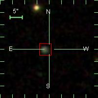 | 11858 | zSNIa | 0.291263 | 1.05213 | 0.359498 | 1.0516360 | 0.35950400 | |
| 11864 | SNIa | 0.303000 | 26.9280 | 0.207300 | 26.928318 | 0.20721400 | ||
| 12110 | zSNIa | 0.281390 | 338.677 | 0.0114210 | 338.67676 | 0.011136000 | ||
| 12136 | SNIa | 0.349943 | 350.090 | -0.349823 | 350.09077 | -0.34988300 | ||
| 12199 | zSNIa | 0.310404 | 349.165 | -1.15818 | 349.16598 | -1.1584660 | ||
| 12308 | zSNIa | 0.279997 | 350.176 | 0.965293 | 350.17588 | 0.96527700 | ||
| 12779 | SNIa | 0.0799480 | 309.473 | 1.21943 | 309.47187 | 1.2211220 | ||
| 12780 | SNIa | 0.0494080 | 322.157 | 1.23019 | 322.15469 | 1.2281070 | ||
| 12781 | SNIa | 0.0840830 | 5.40787 | -1.01062 | 5.4065640 | -1.0099730 | |
| | 12804 | zSNIa | 0.133717 | 18.2017 | 1.04020 | 18.201660 | 1.0402040 |
| 12840 | zSNIa | 0.339305 | 319.847 | -1.02770 | 319.84689 | -1.0275890 | ||
| 12841 | SNIa | 0.293488 | 321.347 | -1.03410 | 321.34725 | -1.0336690 | |
| 12843 | SNIa | 0.167253 | 323.879 | -0.979633 | 323.87809 | -0.98027400 | |
| 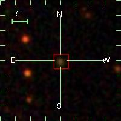 | 12850 | zSNIa | 0.305003 | 325.410 | -0.437336 | 325.40968 | -0.43727600 | |
| 12851 | SNIa | 0.245000 | 344.781 | -0.627204 | 344.78107 | -0.62737400 | ||
| 12852 | zSNIa | 0.264000 | NaN | NaN | 314.25309 | 0.68917800 | |
| | 12853 | SNIa | 0.169400 | 316.765 | 0.723404 | 316.76556 | 0.72307000 |
| 12855 | SNIa | 0.172000 | NaN | NaN | 330.25553 | 0.71623900 | |
| 12856 | SNIa | 0.171673 | 332.865 | 0.755589 | 332.86548 | 0.75597800 | ||
| 12860 | SNIa | 0.121679 | 323.695 | 1.17541 | 323.69419 | 1.1759120 | ||
| 12869 | SNIa | 0.279533 | 327.399 | 0.00187800 | 327.39912 | 0.0010780000 | ||
| 12875 | zSNIa | 0.264695 | 357.127 | -0.0622020 | 357.12746 | -0.062183000 | ||
| 12879 | zSNIa | 0.364989 | 7.44917 | -0.162015 | 7.4491800 | -0.16198500 | ||
| 12881 | SNIa | 0.238109 | 10.1624 | -0.0735710 | 10.162345 | -0.073567000 | |
| 12883 | SNIa | 0.307000 | 312.626 | 0.398518 | 312.62589 | 0.39866600 | ||
| 12897 | SNIa | 0.0176180 | 18.4243 | -0.102712 | 18.421387 | -0.10157700 | ||
| 12898 | SNIa | 0.0835810 | 26.7931 | -0.146867 | 26.793083 | -0.14696400 | ||
| 12907 | SNIa | 0.132042 | 20.4077 | 0.414362 | 20.407839 | 0.41453300 | ||
| 12927 | SNIa | 0.189776 | 41.7857 | 0.775276 | 41.786140 | 0.77512800 | ||
| 12928 | SNIa | 0.139700 | 305.009 | -0.974649 | 305.00903 | -0.97569400 | ||
| | 12930 | SNIa | 0.147168 | 309.683 | -0.476396 | 309.68278 | -0.47452900 |
| 12947 | zSNIa | 0.159200 | 305.333 | -0.596435 | 305.33227 | -0.59668800 | ||
| 12950 | SNIa | 0.0827340 | 351.667 | -0.840618 | 351.66745 | -0.84027600 | ||
| 12964 | zSNIa | 0.216700 | NaN | NaN | 309.95205 | -0.071114000 | |
| 12971 | SNIa | 0.235240 | 6.64761 | -0.303284 | 6.6485020 | -0.30207200 | ||
| 12972 | SNIa | 0.258000 | 7.95858 | -0.383055 | 7.9585930 | -0.38295700 | |
| 12974 | zSNIa | 0.306327 | 21.6418 | -0.228400 | 21.641783 | -0.22833600 | ||
| 12977 | SNIa | 0.247804 | 13.6957 | -0.251007 | 13.695609 | -0.25086300 | ||
| 12979 | SNIa? | 0.116541 | 11.6008 | 0.00237800 | 11.601476 | 0.0034820000 | |
| 12983 | SNIa | 0.265310 | 16.4583 | 0.145368 | 16.458780 | 0.14480500 | ||
| 13005 | SNIa | 0.127284 | 27.3946 | -0.649698 | 27.395458 | -0.64988200 | |
| 13016 | zSNIa | 0.250980 | 25.5885 | 0.979663 | 25.588535 | 0.97968000 | ||
| 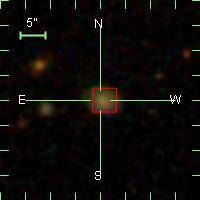 | 13025 | SNIa | 0.224358 | 341.568 | 0.416204 | 341.56733 | 0.41589600 | |
| 13038 | SNIa | 0.104000 | NaN | NaN | 347.82678 | 0.50460600 | |
| 13044 | SNIa | 0.125883 | 332.543 | 0.503934 | 332.54275 | 0.50326500 | ||
| 13045 | SNIa | 0.180600 | 345.025 | 0.537547 | 345.02494 | 0.53767000 | ||
| 13051 | zSNIa | 0.285147 | 337.138 | -0.216279 | 337.13776 | -0.21689900 | ||
| 13070 | SNIa | 0.198628 | 357.785 | -0.746566 | 357.78506 | -0.74634100 | |
| 13072 | SNIa | 0.230633 | 334.961 | 0.0237010 | 334.95947 | 0.024371000 | ||
| 13096 | zSNIa | 0.392006 | 358.370 | -1.20226 | 358.37022 | -1.2021480 | ||
| 13099 | SNIa | 0.266025 | 359.819 | -1.25071 | 359.81873 | -1.2503840 | ||
| 13101 | zSNIa | 0.368376 | 1.60227 | -1.23184 | 1.6020880 | -1.2317470 | ||
| 13108 | zSNIa | 0.205986 | 9.87087 | -1.20000 | 9.8707980 | -1.2003230 | ||
| 13135 | SNIa | 0.104671 | 4.17437 | -0.425159 | 4.1722860 | -0.42454000 | ||
| 13136 | SNIa | 0.372057 | 6.14025 | -0.279583 | 6.1406820 | -0.27906100 | ||
| 13152 | SNIa | 0.203548 | 7.05213 | 0.117998 | 7.0521110 | 0.11801000 | |
| 13174 | SNIa? | 0.236133 | 13.2347 | 0.447854 | 13.234693 | 0.44785800 | ||
| 13177 | zSNIa | 0.318671 | 21.6073 | 0.564685 | 21.607294 | 0.56470400 | ||
| 13244 | zSNIa | 0.365548 | 40.3788 | 0.0157660 | 40.378841 | 0.015786000 | ||
| 13254 | SNIa | 0.180746 | 42.0587 | -0.346813 | 42.058674 | -0.34702800 | ||
| | 13305 | SNIa | 0.214812 | 331.100 | 0.690814 | 331.10049 | 0.69121400 |
| | 13323 | zSNIa | 0.232620 | 323.051 | -0.134414 | 323.05128 | -0.13462800 |
| 13327 | SNIa | 0.282247 | 338.727 | 0.00225900 | 338.72739 | 0.0020380000 | ||
| 13333 | zSNIa | 0.277326 | 318.649 | 0.278480 | 318.64920 | 0.27817800 | ||
| 13334 | zSNIa | 0.245710 | 321.677 | 0.394571 | 321.67709 | 0.39459500 | |
| 13344 | zSNIa | 0.207977 | 336.166 | 0.378962 | 336.16571 | 0.37899800 | ||
| 13354 | SNIa | 0.157625 | 27.5647 | -0.886701 | 27.564823 | -0.88727200 | ||
| 13357 | SNIa? | 0.326058 | 29.4735 | -0.533590 | 29.472937 | -0.53415300 | ||
| 13370 | SNIa | 0.199000 | 27.1517 | 0.328775 | 27.151546 | 0.32821900 | ||
| 13378 | zSNIa | 0.305136 | 36.5424 | 1.14561 | 36.542618 | 1.1464400 | |
| 13411 | SNIa | 0.163000 | 315.190 | 0.191726 | 315.18995 | 0.19166200 | ||
| 13425 | SNIa | 0.212612 | 338.541 | 0.0548720 | 338.54168 | 0.054988000 | |
| 13441 | zSNIa | 0.288760 | 346.952 | -0.232842 | 346.95303 | -0.23298400 | |
| 13452 | zSNIa | 0.455383 | 1.92071 | -0.351226 | 1.9208310 | -0.35125800 | ||
| 13460 | zSNIa | 0.310903 | 345.714 | 0.142040 | 345.71455 | 0.14197300 | |
| 13465 | zSNIa | 0.286372 | 348.883 | 0.0160870 | 348.88295 | 0.016181000 | ||
| 13467 | SNIa? | 0.0686460 | 354.946 | 0.205830 | 354.94646 | 0.20523400 | ||
| 13476 | zSNIa | 0.275720 | 356.017 | -0.790640 | 356.01670 | -0.79092900 | ||
| 13477 | zSNIa | 0.365325 | 7.80510 | -0.708459 | 7.8052700 | -0.70829900 | ||
| 13487 | zSNIa | 0.289052 | 35.1406 | 0.203345 | 35.140060 | 0.20284100 | ||
| 13491 | zSNIa | 0.362005 | 43.2856 | 0.118637 | 43.286087 | 0.11900100 | |
| 13497 | zSNIa | 0.395788 | 25.9348 | -1.04648 | 25.934843 | -1.0459750 | ||
| 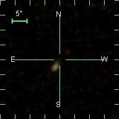 | 13506 | SNIa | 0.244619 | 25.2437 | -0.728452 | 25.243341 | -0.72784600 | |
| 13510 | zSNIa | 0.254494 | 38.9972 | -0.824475 | 38.997334 | -0.82376600 | ||
| | 13511 | SNIa | 0.237440 | 40.6113 | -0.794230 | 40.612354 | -0.79412200 |
| 13518 | SNIa | 0.299000 | NaN | NaN | 16.951632 | -0.10984200 | |
| 13520 | zSNIa | 0.269329 | 17.1754 | -0.0160000 | 17.175323 | -0.015893000 | ||
| 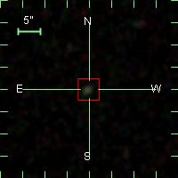 | 13529 | zSNIa | 0.302444 | 21.7201 | 0.336797 | 21.720037 | 0.33679700 | |
| 13532 | zSNIa | 0.264942 | 9.28625 | 0.577920 | 9.2861050 | 0.57807700 | ||
| 13545 | zSNIa | 0.214018 | 52.3427 | 0.596293 | 52.342709 | 0.59629700 | ||
| 13578 | SNIa | 0.228000 | 17.3949 | 0.704423 | 17.394697 | 0.70415800 | ||
| 13590 | zSNIa | 0.496918 | 328.669 | -0.107064 | 328.66849 | -0.10718000 | ||
| 13597 | zSNIa | 0.562920 | 10.2153 | -0.420062 | 10.215238 | -0.42006000 | ||
| 13610 | SNIa | 0.298307 | 326.014 | 0.725496 | 326.01478 | 0.72628400 | ||
| 13629 | zSNIa | 0.353187 | 355.633 | -0.0525540 | 355.63258 | -0.052847000 | ||
| 13633 | zSNIa | 0.387655 | 4.66537 | 0.00545000 | 4.6656730 | 0.0059650000 | ||
| 13641 | SNIa | 0.210000 | NaN | NaN | 345.21873 | -0.98114300 | |
| 13646 | zSNIa | 0.305435 | 357.473 | -1.03217 | 357.47253 | -1.0320770 | ||
| 13655 | SNIa | 0.252000 | 39.0208 | -0.994356 | 39.020218 | -0.99417900 | ||
| 13660 | zSNIa | 0.370585 | 40.1550 | -0.552269 | 40.154667 | -0.55188300 | ||
| 13677 | zSNIa | 0.304671 | 325.020 | -1.02141 | 325.02092 | -1.0207310 | ||
| 13689 | SNIa | 0.251768 | 4.01523 | 0.808348 | 4.0161250 | 0.80755800 | ||
| 13703 | zSNIa | 0.235496 | 39.0149 | 1.25152 | 39.013744 | 1.2534520 | ||
| 13727 | SNIa | 0.226638 | 317.587 | 0.932332 | 317.58808 | 0.93262000 | ||
| 13731 | zSNIa | 0.458686 | 321.790 | 0.978923 | 321.79030 | 0.97894900 | ||
| 13732 | zSNIa | 0.402256 | NaN | NaN | 324.26830 | 0.90103500 | |
| 13734 | zSNIa | 0.378459 | 329.838 | 1.01059 | 329.83807 | 1.0106100 | ||
| 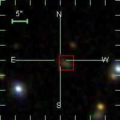 | 13736 | SNIa | 0.150207 | 336.833 | 1.03071 | 336.83329 | 1.0309710 | |
| 13737 | zSNIa | 0.394955 | 338.926 | 0.962651 | 338.92629 | 0.96268000 | ||
| 13757 | SNIa | 0.289000 | NaN | NaN | 350.12309 | -1.1578470 | |
| 13787 | zSNIa | 0.564901 | 10.0700 | -0.685330 | 10.069977 | -0.68485700 | ||
| 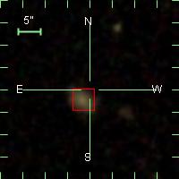 | 13796 | SNIa | 0.148699 | 350.692 | 0.532315 | 350.69157 | 0.53288300 |
| 13807 | zSNIa | 0.513851 | 10.5999 | 0.448326 | 10.599832 | 0.44839400 | ||
| 13813 | zSNIa | 0.236460 | 318.321 | -0.404770 | 318.32088 | -0.40476000 | ||
| 13820 | zSNIa | 0.135721 | 325.633 | -0.320160 | 325.63278 | -0.32000700 | ||
| 13830 | SNIa | 0.331470 | 351.561 | -0.381832 | 351.56172 | -0.38228100 | ||
| 13833 | zSNIa | 0.516581 | 354.321 | -0.209018 | 354.32155 | -0.20934200 | ||
| 13835 | SNIa | 0.247488 | 6.05936 | -0.249266 | 6.0596440 | -0.24826200 | |
| 13836 | zSNIa | 0.374341 | 6.91345 | -0.363262 | 6.9134500 | -0.36324500 | ||
| 13861 | zSNIa | 0.393679 | 337.847 | 0.0751890 | 337.84755 | 0.075452000 | ||
| 13864 | zSNIa | 0.300850 | 348.575 | 0.191033 | 348.57411 | 0.19106800 | ||
| 13867 | zSNIa | 0.347239 | 351.455 | 0.0294290 | 351.45491 | 0.029487000 | ||
| 13894 | SNIa | 0.121000 | 1.69061 | -0.0367700 | 1.6906100 | -0.036760000 | ||
| 13896 | zSNIa | 0.157317 | 2.71297 | -0.0699590 | 2.7128770 | -0.069825000 | ||
| | 13897 | zSNIa | 0.231818 | 6.15638 | -0.0260440 | 6.1564870 | -0.026198000 |
| 13898 | zSNIa | 0.226262 | 18.0161 | -0.0246550 | 18.016148 | -0.024707000 | ||
| 13901 | zSNIa | 0.431273 | 21.9209 | -0.144575 | 21.921043 | -0.14459300 | ||
| 13902 | zSNIa | 0.325011 | 348.973 | 0.252211 | 348.97254 | 0.25236800 | ||
| 13903 | SNIa? | 0.263500 | 359.799 | 0.251530 | 359.80092 | 0.25179700 | |
| 13904 | zSNIa | 0.217646 | 6.85977 | 0.283608 | 6.8597750 | 0.28357600 | |
| 13907 | zSNIa | 0.197127 | 14.1795 | 0.232642 | 14.179407 | 0.23228300 | |
| 13908 | zSNIa | 0.239774 | 15.9159 | 0.295153 | 15.916054 | 0.29516100 | ||
| 13909 | zSNIa | 0.293290 | 16.4200 | 0.312015 | 16.419333 | 0.31180700 | ||
| 13933 | zSNIa | 0.434257 | 337.266 | -0.563578 | 337.26557 | -0.56335600 | ||
| 13934 | SNIa | 0.330932 | 342.110 | -0.435144 | 342.11101 | -0.43526800 | ||
| 13940 | zSNIa | 0.234956 | 22.9796 | -0.452439 | 22.979618 | -0.45240300 | ||
| 13942 | zSNIa | 0.529984 | 28.8250 | -0.582174 | 28.824596 | -0.58203100 | ||
| 13946 | zSNIa | 0.245902 | 33.4801 | -0.482714 | 33.480000 | -0.48255300 | ||
| 13952 | zSNIa | 0.329410 | 4.63452 | 0.788837 | 4.6345050 | 0.78860800 | ||
| 13953 | zSNIa | 0.262438 | 9.86141 | 0.745950 | 9.8613440 | 0.74576000 | ||
| 13956 | SNIa | 0.262000 | 20.9415 | 0.816262 | 20.941811 | 0.81673500 | ||
| 13958 | zSNIa | 0.302507 | 21.7878 | 0.800443 | 21.787842 | 0.80048900 | |
| 13971 | zSNIa | 0.261899 | 23.6600 | 1.23654 | 23.660263 | 1.2363990 | |
| 13998 | zSNIa | 0.122683 | 324.076 | -0.0255820 | 324.07556 | -0.025429000 | ||
| 14019 | SNIa | 0.216400 | 316.642 | -0.648631 | 316.64242 | -0.64795200 | ||
| 14024 | SNIa | 0.146000 | 318.198 | 0.916509 | 318.19856 | 0.91634800 | ||
| 14035 | zSNIa | 0.281725 | 349.967 | -0.278262 | 349.96671 | -0.27826600 | ||
| 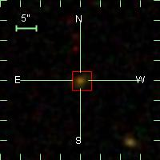 | 14046 | zSNIa | 0.474334 | 351.192 | 0.183611 | 351.19195 | 0.18337800 | |
| 14050 | zSNIa | 0.198479 | 3.73182 | 0.192692 | 3.7320090 | 0.19282600 | ||
| 14074 | zSNIa | 0.261920 | 342.126 | -0.825245 | 342.12599 | -0.82524200 | ||
| 14093 | zSNIa | 0.453804 | 26.5393 | -1.05634 | 26.539288 | -1.0562780 | ||
| 14108 | SNIa | 0.133000 | 53.5947 | -1.12303 | 53.594646 | -1.1232100 | ||
| 14113 | zSNIa | 0.242319 | 28.4445 | -0.818434 | 28.444485 | -0.81836400 | |
| 14137 | zSNIa | 0.311647 | 56.5185 | -0.400884 | 56.519169 | -0.40073900 | ||
| 14149 | zSNIa | 0.536150 | 40.1244 | 0.0512870 | 40.124577 | 0.051316000 | ||
| 14157 | SNIa | 0.211500 | 51.1370 | 1.02263 | 51.136692 | 1.0223650 | ||
| 14205 | zSNIa | 0.253653 | 17.1904 | 0.733310 | 17.190704 | 0.73348700 | ||
| 14212 | SNIa | 0.204490 | 330.471 | 1.04448 | 330.47011 | 1.0450110 | ||
| 14223 | zSNIa | 0.345050 | 328.719 | -0.501539 | 328.71885 | -0.50128000 | |
| 14250 | zSNIa | 0.367180 | 12.8223 | -0.604989 | 12.822441 | -0.60522200 | ||
| 14260 | zSNIa | 0.366700 | NaN | NaN | 53.238544 | -0.12529800 | |
| 14261 | SNIa | 0.285847 | 328.240 | 0.253680 | 328.24040 | 0.25379400 | ||
| 14279 | SNIa | 0.0453890 | 18.4883 | 0.371420 | 18.488775 | 0.37166900 | ||
| 14284 | SNIa | 0.181066 | 49.0493 | -0.600983 | 49.049294 | -0.60094400 | |
| 14298 | SNIa | 0.262000 | NaN | NaN | 314.89505 | 1.2232570 | |
| 14311 | zSNIa | 0.336024 | 317.103 | -0.0525300 | 317.10331 | -0.052263000 | ||
| 14317 | zSNIa | 0.181000 | 315.571 | 0.330592 | 315.57067 | 0.33025200 | |
| 14318 | SNIa | 0.0578660 | 340.425 | -0.136941 | 340.42520 | -0.13690500 | ||
| 14327 | zSNIa | 0.420803 | 2.34571 | -0.190153 | 2.3456250 | -0.19020300 | ||
| 14330 | zSNIa | 0.252791 | 7.12564 | -0.0682320 | 7.1257460 | -0.068405000 | |
| 14331 | SNIa | 0.221159 | 7.88905 | -0.135590 | 7.8886750 | -0.13581400 | |
| 14333 | zSNIa | 0.270090 | 16.2855 | -0.0125830 | 16.285339 | -0.012631000 | ||
| 14340 | zSNIa | 0.277441 | 345.827 | -0.855272 | 345.82667 | -0.85530900 | ||
| 14342 | zSNIa | 0.433187 | 36.7624 | -0.124480 | 36.762402 | -0.12444000 | ||
| 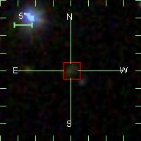 | 14343 | zSNIa | 0.343052 | 0.707771 | -0.954216 | 0.70721100 | -0.95402100 | |
| 14346 | zSNIa | 0.213291 | 7.14890 | -1.00371 | 7.1488950 | -1.0037230 | ||
| 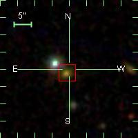 | 14375 | zSNIa | 0.323264 | 37.8772 | -0.573476 | 37.876961 | -0.57321700 | |
| 14377 | SNIa? | 0.139410 | 48.2638 | -0.471765 | 48.264305 | -0.47162600 | ||
| 14382 | zSNIa | 0.417805 | 359.149 | 0.204114 | 359.14868 | 0.20425800 | ||
| | 14389 | zSNIa | 0.232806 | 27.0392 | 0.295936 | 27.038616 | 0.29608200 |
| 14397 | SNIa | 0.386529 | 6.91560 | 0.649317 | 6.9160980 | 0.64950700 | |
| 14403 | zSNIa | 0.289816 | 16.8382 | 0.651953 | 16.838352 | 0.65185900 | ||
| 14421 | SNIa | 0.175041 | 31.8299 | 1.25202 | 31.829882 | 1.2520840 | ||
| 14437 | SNIa | 0.149267 | 332.081 | -1.19631 | 332.08096 | -1.1963870 | ||
| 14438 | zSNIa | 0.297526 | 340.065 | -1.06889 | 340.06526 | -1.0692890 | ||
| 14444 | zSNIa | 0.245916 | 336.702 | -0.815754 | 336.70157 | -0.81566100 | |
| 14445 | zSNIa | 0.236980 | 340.962 | -0.753886 | 340.96265 | -0.75394500 | |
| 14446 | zSNIa | 0.308083 | 342.626 | -0.672938 | 342.62648 | -0.67333900 | |
| 14451 | SNIa | 0.179000 | 308.195 | 0.926974 | 308.19495 | 0.92706900 | ||
| 14456 | SNIa | 0.329562 | 343.551 | 1.05088 | 343.55110 | 1.0506610 | ||
| 14470 | zSNIa | 0.195430 | 44.2150 | -0.351696 | 44.214973 | -0.35168900 | ||
| 14478 | zSNIa | 0.281762 | 355.293 | 0.0691020 | 355.29260 | 0.069189000 | ||
| 14480 | zSNIa | 0.330796 | 0.0175490 | 0.0228900 | 0.017501000 | 0.022962000 | ||
| | 14481 | SNIa | 0.243538 | 2.68148 | 0.201848 | 2.6817340 | 0.20130600 |
| 14498 | zSNIa | 0.346500 | 11.7639 | -1.22468 | 11.763855 | -1.2246360 | ||
| 14500 | zSNIa | 0.403372 | 24.0322 | -1.10471 | 24.032160 | -1.1046820 | ||
| 14522 | zSNIa | 0.438058 | 28.5288 | -0.725903 | 28.528746 | -0.72556800 | ||
| 14523 | zSNIa | 0.227090 | 30.1260 | -0.710595 | 30.126009 | -0.71053100 | ||
| 14524 | zSNIa | 0.272173 | 41.5626 | -0.797663 | 41.562813 | -0.79777500 | ||
| 14525 | zSNIa | 0.154365 | 16.8828 | 0.477454 | 16.882795 | 0.47723100 | |
| 14545 | zSNIa | 0.278000 | 351.748 | 1.01759 | 351.74823 | 1.0172280 | ||
| 14548 | zSNIa | 0.340280 | 5.72457 | 0.832856 | 5.7245940 | 0.83281500 | |
| 14549 | zSNIa | 0.268413 | 8.18107 | 0.963520 | 8.1811350 | 0.96339000 | |
| 14554 | zSNIa | 0.250867 | 14.6922 | 0.888759 | 14.692070 | 0.88864800 | ||
| 14589 | zSNIa | 0.270000 | 48.0111 | -0.677902 | 48.012154 | -0.67750900 | ||
| 14593 | zSNIa | 0.307205 | 54.9636 | -0.777620 | 54.963753 | -0.77773500 | ||
| 14624 | zSNIa | 0.434864 | 323.441 | 0.345607 | 323.44135 | 0.34594300 | |
| 14638 | zSNIa | 0.278020 | 358.560 | -0.124840 | 358.55986 | -0.12474000 | ||
| 14644 | zSNIa | 0.449299 | 24.0811 | -0.0695830 | 24.080694 | -0.069628000 | ||
| 14654 | zSNIa | 0.381922 | 349.358 | -0.846780 | 349.35764 | -0.84662600 | ||
| 14671 | zSNIa | 0.371526 | 24.9366 | -0.835699 | 24.936346 | -0.83550100 | ||
| 14675 | zSNIa | 0.255439 | 32.9946 | -0.0428710 | 32.994560 | -0.043311000 | ||
| 14683 | zSNIa | 0.292264 | 36.8059 | -0.0810330 | 36.805866 | -0.080950000 | ||
| 14708 | zSNIa | 0.419382 | 15.3146 | -0.464926 | 15.314585 | -0.46488200 | |
| 14733 | zSNIa | 0.498802 | 14.1448 | 0.230971 | 14.144748 | 0.23097700 | ||
| 14735 | SNIa | 0.300443 | 35.1585 | 0.348125 | 35.158035 | 0.34837800 | ||
| 14750 | zSNIa | 0.214900 | 34.5190 | 0.653071 | 34.519012 | 0.65306000 | ||
| 14751 | zSNIa | 0.242695 | 36.3166 | 0.674127 | 36.316498 | 0.67432200 | ||
| 14753 | zSNIa | 0.135401 | 44.3411 | 0.686604 | 44.342052 | 0.68720300 | ||
| 14763 | zSNIa | 0.375042 | 33.5667 | 1.12137 | 33.566685 | 1.1214220 | ||
| 14771 | zSNIa | 0.267073 | 41.8448 | 1.15687 | 41.844753 | 1.1570190 | ||
| 14782 | SNIa | 0.179000 | 314.234 | -0.279172 | 314.23425 | -0.27904400 | ||
| 14784 | zSNIa | 0.192320 | 323.799 | -0.348867 | 323.79843 | -0.34821800 | ||
| 14809 | zSNIa | 0.371489 | 331.376 | -0.656133 | 331.37592 | -0.65586100 | ||
| 14815 | SNIa | 0.136273 | 319.072 | 0.559508 | 319.07164 | 0.55949200 | ||
| 14816 | SNIa | 0.107221 | 336.716 | 0.506395 | 336.71630 | 0.50605600 | ||
| 14823 | zSNIa | 0.349572 | 20.8029 | -0.310435 | 20.802914 | -0.31047400 | ||
| 14826 | zSNIa | 0.134867 | 23.3590 | -0.346221 | 23.359144 | -0.34568800 | ||
| 14827 | zSNIa | 0.410778 | 24.7725 | -0.366175 | 24.772532 | -0.36599000 | ||
| 14831 | zSNIa | 0.536047 | 32.0800 | -0.331090 | 32.080750 | -0.33129700 | |
| 14844 | zSNIa | 0.474885 | 353.415 | 0.176629 | 353.41527 | 0.17667700 | ||
| 14845 | zSNIa | 0.358926 | 5.97683 | 0.0823970 | 5.9767780 | 0.082473000 | ||
| 14846 | SNIa | 0.224756 | 7.66261 | 0.142013 | 7.6632360 | 0.14158100 | ||
| 14863 | zSNIa | 0.473755 | 35.7447 | 0.183277 | 35.744743 | 0.18301100 | ||
| 14871 | SNIa | 0.119000 | 54.2769 | 0.00925800 | 54.277100 | 0.0093600000 | ||
| 14876 | zSNIa | 0.280067 | 356.110 | -0.797688 | 356.11006 | -0.79748900 | ||
| 14894 | zSNIa | 0.437768 | 35.2825 | -0.757990 | 35.282310 | -0.75790100 | ||
| 14937 | zSNIa | 0.479807 | 25.8721 | 0.421805 | 25.872101 | 0.42181800 | ||
| 14947 | zSNIa | 0.232006 | 42.7982 | 0.453201 | 42.797913 | 0.45262700 | ||
| 14961 | zSNIa | 0.370501 | 15.9194 | 0.931298 | 15.919511 | 0.93103100 | ||
| 14965 | zSNIa | 0.280999 | 18.9354 | 1.03770 | 18.935520 | 1.0378720 | ||
| 14972 | zSNIa | 0.255584 | 28.3482 | 0.987010 | 28.347670 | 0.98666300 | ||
| 14979 | SNIa | 0.177100 | 54.9465 | 0.992111 | 54.946434 | 0.99281600 | |
| 14984 | SNIa | 0.184000 | 313.833 | -0.0934730 | 313.83357 | -0.092790000 | ||
| 15002 | SNIa? | 0.362000 | NaN | NaN | 22.249809 | 0.76994900 | |
| 15006 | zSNIa | 0.479790 | 26.5446 | 0.667049 | 26.544310 | 0.66647400 | ||
| 15009 | SNIa? | 0.292201 | 32.7984 | 0.696697 | 32.798561 | 0.69583000 | ||
| 15018 | zSNIa | 0.201776 | 25.1401 | 1.14582 | 25.139965 | 1.1458490 | ||
| 15033 | zSNIa | 0.216974 | 15.7785 | -0.156788 | 15.778457 | -0.15667300 | |
| 15041 | zSNIa | 0.714592 | 29.2763 | -0.146598 | 29.276295 | -0.14659800 | ||
| | 15057 | SNIa | 0.299000 | 17.8812 | 0.409524 | 17.881262 | 0.40949200 |
| 15063 | zSNIa | 0.342773 | 31.2819 | 0.323475 | 31.282049 | 0.32364800 | ||
| 15101 | zSNIa | 0.181950 | 322.785 | -0.486137 | 322.78497 | -0.48614100 | ||
| 15102 | zSNIa | 0.583407 | 330.370 | -0.597926 | 330.36971 | -0.59789500 | ||
| 15103 | zSNIa | 0.397000 | 338.099 | -0.505193 | 338.09867 | -0.50462500 | ||
| 15108 | zSNIa | 0.420066 | 24.4350 | -0.541619 | 24.434727 | -0.54152300 | ||
| 15120 | zSNIa | 0.534776 | 38.6932 | -0.999142 | 38.693001 | -0.99901800 | ||
| 15129 | SNIa | 0.197395 | 318.902 | -0.321713 | 318.90239 | -0.32143300 | ||
| 15132 | SNIa | 0.154382 | 329.700 | 0.198780 | 329.70023 | 0.19768600 | ||
| 15136 | SNIa? | 0.148743 | 351.162 | -0.717950 | 351.16255 | -0.71835700 | ||
| 15137 | zSNIa | 0.278904 | 356.107 | -0.806668 | 356.10739 | -0.80652900 | ||
| 15160 | zSNIa | 0.252226 | 358.429 | -0.579091 | 358.42892 | -0.57910900 | ||
| | 15161 | SNIa | 0.249554 | 35.8426 | 0.819020 | 35.842915 | 0.81900300 |
| 15170 | SNIa | 0.395000 | NaN | NaN | 58.058578 | 0.29206900 | |
| 15171 | SNIa | 0.139200 | 304.792 | -1.06431 | 304.79254 | -1.0644890 | ||
| 15198 | zSNIa | 0.289402 | 34.6288 | -0.212733 | 34.627518 | -0.21222200 | ||
| 15201 | SNIa | 0.208812 | 337.519 | 0.00313000 | 337.51941 | 0.0036390000 | |
| 15203 | SNIa | 0.204439 | 15.7348 | 0.183005 | 15.734715 | 0.18308700 | |
| 15213 | SNIa | 0.307000 | 53.0192 | -0.100246 | 53.019138 | -0.10014200 | ||
| 15217 | SNIa | 0.381433 | 22.6341 | 0.220985 | 22.634209 | 0.21980100 | ||
| 15219 | SNIa | 0.247421 | 34.6108 | 0.226135 | 34.611145 | 0.22668800 | |
| 15220 | zSNIa | 0.464547 | 42.2831 | 0.286663 | 42.283169 | 0.28633700 | ||
| | 15222 | SNIa | 0.199430 | 2.85240 | 0.702024 | 2.8533770 | 0.70274400 |
| 15226 | zSNIa | 0.288597 | 33.6634 | 0.696430 | 33.663292 | 0.69638800 | ||
| 15229 | SNIa | 0.224000 | 4.83199 | 1.09064 | 4.8319840 | 1.0907190 | ||
| 15234 | SNIa | 0.136358 | 16.9580 | 0.828588 | 16.958336 | 0.82819800 | |
| 15239 | zSNIa | 0.334228 | 0.606312 | -0.918465 | 0.60694500 | -0.91819200 | ||
| 15254 | SNIa? | 0.203000 | 313.493 | -0.360579 | 313.49291 | -0.36005200 | |
| 15259 | SNIa | 0.212000 | 337.544 | -0.407805 | 337.54420 | -0.40781900 | ||
| 15260 | zSNIa | 0.253699 | 339.177 | -0.275311 | 339.17739 | -0.27570000 | ||
| 15263 | zSNIa | 0.467976 | 325.806 | 0.00999900 | 325.80643 | 0.010047000 | ||
| 15268 | zSNIa | 0.298563 | 338.445 | 0.138683 | 338.44498 | 0.13872300 | ||
| 15272 | zSNIa | 0.280459 | 350.772 | 0.0843590 | 350.77314 | 0.084447000 | ||
| 15287 | SNIa | 0.237679 | 323.961 | -1.05896 | 323.95968 | -1.0574350 | |
| 15301 | SNIa | 0.248000 | 323.580 | 0.588789 | 323.57992 | 0.58910600 | |
| 15303 | zSNIa | 0.234351 | 350.509 | 0.540943 | 350.50888 | 0.54104800 | |
| 15324 | zSNIa | 0.392801 | 31.6933 | -0.838297 | 31.693687 | -0.83899300 | ||
| 15325 | zSNIa | 0.213997 | 32.2983 | -0.742253 | 32.298302 | -0.74229700 | |
| 15340 | SNIa | 0.147500 | 336.003 | 0.821551 | 336.00283 | 0.82135400 | ||
| 15345 | zSNIa | 0.280200 | 335.257 | 0.810605 | 335.25683 | 0.81062100 | ||
| 15347 | zSNIa | 0.270007 | 325.405 | 1.20442 | 325.40521 | 1.2041910 | ||
| 15351 | zSNIa | 0.316355 | 326.535 | -0.0531840 | 326.53544 | -0.053211000 | ||
| 15353 | zSNIa | 0.313149 | 350.292 | -0.175826 | 350.29162 | -0.17578600 | ||
| 15354 | SNIa | 0.222100 | 6.77426 | -0.125965 | 6.7736760 | -0.12597600 | |
| 15356 | SNIa | 0.274927 | 335.053 | 0.409933 | 335.05332 | 0.40994400 | ||
| 15359 | zSNIa | 0.311973 | 347.456 | 0.310865 | 347.45634 | 0.31061600 | ||
| 15363 | zSNIa | 0.178667 | 13.0332 | 0.661310 | 13.033150 | 0.66139700 | ||
| | 15365 | SNIa | 0.187958 | 354.557 | 1.24906 | 354.55666 | 1.2490900 |
| 15369 | SNIa | 0.232000 | 348.833 | -0.562642 | 348.83295 | -0.56260800 | ||
| 15370 | zSNIa | 0.519708 | 0.720752 | -0.501839 | 0.72075100 | -0.50173500 | ||
| 15381 | zSNIa | 0.162000 | 307.076 | 0.493477 | 307.07631 | 0.49343400 | ||
| 15383 | SNIa | 0.316063 | 34.1497 | -0.155286 | 34.149532 | -0.15516200 | ||
| 15386 | zSNIa | 0.287100 | 312.585 | -1.23247 | 312.58489 | -1.2324460 | ||
| 15401 | zSNIa | NaN | 330.855 | 0.576355 | 330.85539 | 0.57640900 | ||
| 15419 | zSNIa | 0.277787 | 19.9052 | 0.885685 | 19.905249 | 0.88573400 | ||
| | 15421 | SNIa | 0.185445 | 33.7413 | 0.602716 | 33.741600 | 0.60250700 |
| 15422 | zSNIa | 0.334328 | 34.6552 | 0.531454 | 34.655132 | 0.53148600 | ||
| 15423 | zSNIa | 0.395058 | 36.5081 | 0.626209 | 36.508152 | 0.62615900 | |
| | 15425 | SNIa | 0.159892 | 55.5611 | 0.478356 | 55.561081 | 0.47828600 |
| 15428 | zSNIa | 0.383289 | 39.0951 | 1.04286 | 39.094196 | 1.0424990 | ||
| | 15433 | SNIa | 0.220681 | 14.8794 | -0.256718 | 14.879633 | -0.25651300 |
| 15440 | SNIa | 0.262254 | 39.7206 | 0.0901060 | 39.720669 | 0.090127000 | ||
| 15443 | SNIa | 0.181908 | 49.8674 | -0.318010 | 49.867435 | -0.31803000 | |
| 15453 | SNIa | 0.175000 | 319.668 | -1.02424 | 319.66830 | -1.0242880 | |
| 15454 | zSNIa | 0.383047 | 327.859 | -0.849155 | 327.85949 | -0.84802000 | ||
| 15455 | zSNIa | 0.407071 | 330.080 | -1.05160 | 330.08054 | -1.0513770 | ||
| 15456 | SNIa | 0.382100 | 331.867 | -0.903794 | 331.86726 | -0.90341300 | |
| 15459 | SNIa | 0.126787 | 340.701 | -0.901767 | 340.70141 | -0.90175100 | |
| 15461 | SNIa | 0.186169 | 326.848 | -0.494751 | 326.84749 | -0.49467700 | |
| 15466 | SNIa | 0.245675 | 317.645 | -0.122691 | 317.64504 | -0.12322000 | |
| 15467 | SNIa | 0.209778 | 320.020 | -0.177355 | 320.01994 | -0.17744100 | ||
| 15470 | zSNIa | 0.233684 | 332.888 | -0.0464200 | 332.88814 | -0.046340000 | |
| 15486 | zSNIa | 0.116007 | 344.990 | 1.23992 | 344.98953 | 1.2402290 | ||
| 15496 | zSNIa | 0.234410 | 8.07402 | 0.274506 | 8.0739820 | 0.27453600 | ||
| 15498 | zSNIa | 0.215546 | 20.4912 | 0.362653 | 20.491087 | 0.36269000 | ||
| 15500 | zSNIa | 0.240492 | 27.9996 | 0.301923 | 27.999640 | 0.30216700 | ||
| 15503 | zSNIa | 0.409642 | 40.4052 | 0.261479 | 40.405033 | 0.26124600 | ||
| 15504 | zSNIa | 0.269753 | 345.701 | -0.876869 | 345.70145 | -0.87642200 | ||
| 15508 | SNIa | 0.134604 | 27.1695 | -0.575760 | 27.168976 | -0.57661100 | ||
| 15516 | zSNIa | 0.365315 | 30.2267 | 0.656749 | 30.226776 | 0.65678400 | |
| 15533 | zSNIa | 0.344401 | 353.863 | -0.373320 | 353.86290 | -0.37329700 | ||
| 15535 | zSNIa | 0.200792 | 1.81776 | -0.303748 | 1.8175530 | -0.30389900 | ||
| 15549 | zSNIa | 0.448849 | 323.511 | 0.633604 | 323.51083 | 0.63420400 | ||
| 15553 | zSNIa | 0.335192 | 321.120 | 0.944217 | 321.12019 | 0.94426000 | |
| 15558 | zSNIa | 0.305943 | 337.494 | 0.953438 | 337.49349 | 0.95350500 | ||
| 15568 | zSNIa | 0.206610 | 356.846 | 1.05006 | 356.84634 | 1.0501820 | ||
| 15580 | zSNIa | 0.322518 | 54.4933 | 0.483262 | 54.493114 | 0.48327200 | ||
| 15583 | SNIa | 0.178000 | 37.7311 | 0.946245 | 37.731079 | 0.94629900 | |
| 15584 | SNIa | 0.284218 | 43.4943 | 0.987843 | 43.495464 | 0.98696500 | ||
| 15587 | zSNIa | 0.218847 | 54.4179 | 0.998368 | 54.417248 | 0.99836300 | |
| 15592 | zSNIa | 0.415635 | 320.467 | -1.17829 | 320.46737 | -1.1784220 | ||
| 15603 | zSNIa | 0.262587 | 355.942 | -1.19216 | 355.94248 | -1.1923420 | ||
| 15628 | zSNIa | 0.448918 | 340.284 | -0.791330 | 340.28449 | -0.79145800 | ||
| 15633 | zSNIa | 0.451021 | 353.907 | -0.839216 | 353.90715 | -0.83920100 | ||
| 15648 | SNIa | 0.175017 | 313.719 | -0.195819 | 313.71838 | -0.19482300 | |
| 15663 | zSNIa | 0.292197 | 336.407 | 1.22950 | 336.40729 | 1.2295860 | ||
| 15674 | SNIa | 0.198000 | NaN | NaN | 340.82916 | 0.26290900 | |
| 15675 | zSNIa | 0.234705 | 343.173 | 0.363796 | 343.17370 | 0.36420400 | ||
| 15685 | zSNIa | 0.385981 | 347.350 | 0.802005 | 347.34942 | 0.80195900 | ||
| 15690 | zSNIa | 0.301222 | 5.44392 | 0.784366 | 5.4439100 | 0.78445700 | ||
| 15693 | zSNIa | 0.341212 | 24.8681 | 0.652733 | 24.866627 | 0.65134200 | ||
| 15704 | SNIa | 0.370549 | 40.2121 | 0.659822 | 40.210735 | 0.65875100 | ||
| 15719 | zSNIa | 0.268672 | 37.6480 | 1.10344 | 37.647995 | 1.1033910 | ||
| 15734 | zSNIa | 0.385000 | NaN | NaN | 5.5302770 | -0.095636000 | |
| 15737 | zSNIa | 0.332983 | 12.3684 | -0.0601590 | 12.368867 | -0.059917000 | ||
| | 15748 | zSNIa | 0.156100 | 48.1146 | -0.130642 | 48.114471 | -0.13064900 |
| 15749 | SNIa? | 0.118400 | 51.2859 | -0.0404120 | 51.285305 | -0.040583000 | ||
| 15753 | zSNIa | 0.159055 | 57.4174 | -0.0276540 | 57.417091 | -0.027911000 | ||
| 15755 | zSNIa | 0.281113 | 358.403 | 0.227485 | 358.40325 | 0.22633500 | ||
| 15756 | SNIa | 0.386701 | 0.375744 | 0.275474 | 0.37483400 | 0.27597400 | ||
| 15760 | SNIa | 0.129000 | 18.8056 | 0.399413 | 18.805836 | 0.39925000 | ||
| 15761 | zSNIa | 0.355011 | 20.2936 | 0.341039 | 20.293596 | 0.34122500 | ||
| 15765 | zSNIa | 0.305139 | 32.8480 | 0.246234 | 32.847168 | 0.24611300 | ||
| 15776 | SNIa | 0.316961 | 32.8303 | -0.998102 | 32.829441 | -0.99825800 | ||
| 15779 | zSNIa | 0.262538 | 345.645 | -0.462644 | 345.64462 | -0.46253400 | ||
| 15782 | zSNIa | 0.307469 | 352.676 | -0.427988 | 352.67622 | -0.42796600 | ||
| 15784 | zSNIa | 0.176900 | 356.674 | -0.615840 | 356.67370 | -0.61535200 | ||
| 15795 | zSNIa | 0.509764 | 22.8917 | 0.924366 | 22.891680 | 0.92439800 | ||
| 15802 | zSNIa | 0.342489 | 29.7533 | -1.07909 | 29.753288 | -1.0793280 | ||
| 15805 | zSNIa | 0.295372 | 22.8715 | -0.717845 | 22.871874 | -0.71785400 | ||
| 15806 | zSNIa | 0.251752 | 24.0923 | -0.830658 | 24.092293 | -0.83061600 | ||
| 15812 | zSNIa | 0.343436 | 19.3600 | -0.309130 | 19.359936 | -0.30894000 | ||
| 15813 | zSNIa | 0.378145 | 25.8490 | -0.337933 | 25.848969 | -0.33791800 | ||
| 15814 | zSNIa | 0.371177 | 29.7250 | -0.372720 | 29.725206 | -0.37266500 | |
| 15822 | zSNIa | 0.233300 | 311.355 | 0.102210 | 311.35480 | 0.10138200 | |
| 15823 | zSNIa | 0.215200 | 314.253 | 0.199100 | 314.25265 | 0.19908200 | ||
| 15829 | zSNIa | 0.248862 | 323.086 | -0.762267 | 323.08560 | -0.76220400 | |
| 15850 | zSNIa | 0.250921 | 0.669854 | -1.16581 | 0.66755600 | -1.1651450 | |
| 15865 | zSNIa | 0.330000 | 57.0672 | 0.498728 | 57.067081 | 0.49878100 | ||
| 15866 | zSNIa | 0.190035 | 338.781 | 0.968094 | 338.78073 | 0.96759100 | |
| 15868 | SNIa | 0.250716 | 38.1004 | -0.714062 | 38.099796 | -0.71357800 | |
| 15872 | SNIa | 0.206456 | 36.7224 | -0.327851 | 36.722496 | -0.32781000 | ||
| 15874 | zSNIa | 0.402736 | 39.7695 | -0.387050 | 39.769539 | -0.38702300 | ||
| 15892 | zSNIa | 0.184080 | 323.199 | 0.688880 | 323.19908 | 0.68946600 | ||
| 15897 | SNIa | 0.174885 | 11.6816 | -1.03249 | 11.681450 | -1.0329050 | |
| 15901 | SNIa | 0.204740 | 31.9763 | -0.535346 | 31.976303 | -0.53538900 | |
| 15902 | zSNIa | 0.265260 | 34.1415 | -0.465564 | 34.141464 | -0.46548700 | ||
| 15909 | zSNIa | 0.218040 | 11.3148 | 0.796990 | 11.314966 | 0.79676800 | ||
| 15916 | zSNIa | 0.466231 | 353.244 | 0.307250 | 353.24405 | 0.30721000 | ||
| 15941 | zSNIa | 0.326069 | 332.932 | -0.684823 | 332.93201 | -0.68479000 | ||
| 15945 | zSNIa | 0.309534 | 354.335 | 0.499626 | 354.33518 | 0.49969500 | |
| 15950 | zSNIa | 0.220428 | 6.18881 | 0.984063 | 6.1887780 | 0.98370600 | ||
| 15953 | zSNIa | 0.355483 | 18.2362 | 0.940372 | 18.236437 | 0.94031500 | ||
| 15961 | zSNIa | 0.285281 | 3.74967 | -0.804247 | 3.7497500 | -0.80429600 | ||
| 15971 | zSNIa | 0.315882 | 40.1126 | 0.526270 | 40.112591 | 0.52627900 | ||
| 15973 | zSNIa | 0.168878 | 26.5907 | 0.889278 | 26.590557 | 0.88972200 | ||
| 15987 | zSNIa | 0.440930 | 4.00937 | 0.111649 | 4.0088450 | 0.11216800 | ||
| 15988 | zSNIa | 0.361309 | 6.25380 | 0.00893800 | 6.2535020 | 0.0092000000 | ||
| 15992 | zSNIa | 0.364455 | 8.88599 | 0.0252030 | 8.8859710 | 0.025440000 | ||
| 15998 | zSNIa | 0.340980 | 20.8627 | 0.0290920 | 20.862656 | 0.029115000 | ||
| 16000 | SNIa | 0.390000 | NaN | NaN | 21.117622 | 0.074385000 | |
| | 16021 | SNIa | 0.124597 | 13.8439 | -0.389215 | 13.843731 | -0.38881100 |
| 16032 | SNIa | 0.204000 | NaN | NaN | 44.069218 | -0.41077100 | |
| 16038 | zSNIa | 0.419782 | 55.5712 | -0.237752 | 55.571018 | -0.23783100 | ||
| 16044 | zSNIa | 0.408288 | 41.4185 | -1.08810 | 41.418507 | -1.0880490 | ||
| 16048 | zSNIa | 0.380767 | 35.8429 | -0.682402 | 35.843761 | -0.68269300 | ||
| 16052 | zSNIa | 0.144400 | 58.6004 | -0.720694 | 58.600208 | -0.72073600 | |
| 16069 | SNIa | 0.128250 | 341.245 | -1.00638 | 341.24608 | -1.0065980 | ||
| 16072 | SNIa | 0.285857 | 3.12457 | -0.977832 | 3.1244400 | -0.97730900 | ||
| 16073 | SNIa | 0.154716 | 8.10767 | -1.05390 | 8.1077630 | -1.0540010 | |
| 16090 | zSNIa | 0.502136 | 36.5283 | 0.624110 | 36.528057 | 0.62426900 | |
| 16091 | zSNIa | 0.300600 | 50.1900 | 0.842074 | 50.190060 | 0.84185300 | ||
| 16093 | SNIa | 0.336029 | 350.362 | 1.13261 | 350.36247 | 1.1324830 | ||
| 16099 | SNIa | 0.196948 | 26.4212 | -1.05459 | 26.420935 | -1.0543860 | ||
| 16100 | SNIa | 0.195000 | 30.4363 | -1.03238 | 30.436289 | -1.0324100 | ||
| 16103 | zSNIa | 0.202400 | 312.975 | -1.05012 | 312.97517 | -1.0500750 | ||
| 16106 | SNIa | 0.251200 | 332.090 | -1.14829 | 332.08935 | -1.1487810 | ||
| | 16108 | SNIa | 0.186000 | NaN | NaN | 303.01776 | 0.57060900 |
| 16116 | SNIa | 0.156492 | 355.302 | -1.10596 | 355.30201 | -1.1058070 | ||
| 16119 | zSNIa | 0.157064 | 23.2356 | -0.329184 | 23.235373 | -0.32922300 | ||
| 16127 | zSNIa | 0.375227 | 44.6676 | 0.117440 | 44.667629 | 0.11747500 | ||
| 16136 | zSNIa | 0.342718 | 33.4859 | -0.731700 | 33.485847 | -0.73163900 | ||
| 16152 | zSNIa | 0.272000 | 46.9088 | 0.987697 | 46.908478 | 0.98779400 | |
| 16163 | zSNIa | 0.155041 | 31.4992 | -0.855820 | 31.499252 | -0.85567300 | |
| 16165 | SNIa | 0.157000 | NaN | NaN | 30.733135 | -0.53387200 | |
| 16172 | zSNIa | 0.219365 | 57.7051 | -0.218250 | 57.705551 | -0.21915900 | ||
| 16185 | SNIa | 0.101366 | 16.8681 | -0.269343 | 16.868069 | -0.26936500 | ||
| 16199 | zSNIa | 0.282392 | 332.944 | 1.13464 | 332.94433 | 1.1350240 | ||
| 16206 | SNIa | 0.159729 | 5.78832 | -0.0535800 | 5.7881900 | -0.053633000 | ||
| 16211 | SNIa | 0.310991 | 348.163 | 0.265991 | 348.16409 | 0.26693200 | ||
| 16213 | SNIa | 0.250000 | NaN | NaN | 8.9710510 | 0.25840500 | |
| 16215 | SNIa | 0.0470320 | 18.4066 | 0.423756 | 18.407667 | 0.42387500 | ||
| 16219 | zSNIa | 0.258864 | 5.95887 | 0.681569 | 5.9588370 | 0.68164500 | ||
| 16232 | SNIa | 0.375724 | 17.2050 | -0.989524 | 17.205410 | -0.98955300 | ||
| 16236 | zSNIa | 0.405999 | 334.735 | -0.511780 | 334.73535 | -0.51172600 | ||
| 16237 | zSNIa | 0.313153 | 23.0105 | -0.623573 | 23.010454 | -0.62378500 | ||
| 16238 | zSNIa | 0.335098 | 27.9153 | -0.436553 | 27.915134 | -0.43579800 | ||
| 16259 | SNIa | 0.119078 | 352.033 | 0.858183 | 352.02997 | 0.85635500 | ||
| 16276 | SNIa | 0.193000 | 20.5784 | 1.01030 | 20.578657 | 1.0106150 | ||
| 16277 | zSNIa | 0.396301 | 37.2356 | 0.448171 | 37.235535 | 0.44810600 | |
| 16280 | SNIa | 0.0381600 | 14.1217 | -1.22675 | 14.121691 | -1.2267080 | ||
| 16281 | SNIa | 0.186515 | 352.942 | -0.668080 | 352.94215 | -0.66805200 | ||
| 16287 | SNIa | 0.107356 | 46.6649 | 0.0619840 | 46.664509 | 0.064026000 | ||
| 16298 | zSNIa | 0.282787 | 330.412 | 0.576152 | 330.41159 | 0.57610800 | ||
| 16314 | SNIa | 0.0625730 | 320.929 | -0.842973 | 320.92893 | -0.84346900 | ||
| 16333 | SNIa | 0.0719150 | 328.994 | -1.07028 | 328.99370 | -1.0701980 | ||
| 16350 | SNIa | 0.238217 | 323.639 | -0.884976 | 323.63949 | -0.88583100 | ||
| 16352 | SNIa | 0.252270 | 346.249 | -0.872529 | 346.24936 | -0.87336500 | ||
| 16356 | zSNIa | 0.399335 | 318.201 | -0.567542 | 318.20184 | -0.56733200 | ||
| 16357 | SNIa | 0.368000 | NaN | NaN | 330.81918 | -0.60684100 | |
| 16362 | zSNIa | 0.180119 | 17.9511 | -0.496883 | 17.950964 | -0.49710200 | |
| 16392 | SNIa | 0.0585960 | 27.9521 | 0.263828 | 27.950600 | 0.26331200 | ||
| 16393 | zSNIa | 0.316430 | 326.501 | -0.0609680 | 326.50124 | -0.060705000 | ||
| 16396 | zSNIa | 0.300839 | 348.643 | -0.104464 | 348.64292 | -0.10448900 | |
| | 16402 | SNIa | 0.290000 | 336.368 | 0.264943 | 336.36772 | 0.26527500 |
| 16405 | zSNIa | 0.275679 | 356.104 | 0.367853 | 356.10390 | 0.36791700 | ||
| 16408 | zSNIa | 0.266700 | 313.845 | 0.645498 | 313.84444 | 0.64592100 | |
| 16410 | zSNIa | 0.287998 | 319.715 | 0.647843 | 319.71508 | 0.64817500 | ||
| 16414 | SNIa | 0.307732 | 339.326 | 0.738048 | 339.32646 | 0.73813700 | ||
| 16417 | zSNIa | 0.292421 | 12.3454 | 1.21466 | 12.344878 | 1.2147000 | ||
| 16421 | SNIa | 0.302000 | 51.8364 | 1.08966 | 51.836304 | 1.0896580 | ||
| 16432 | zSNIa | 0.399981 | 33.9518 | 1.02342 | 33.951733 | 1.0234210 | ||
| 16433 | zSNIa | 0.402876 | 36.9959 | -1.16943 | 36.995888 | -1.1693090 | ||
| 16434 | zSNIa | 0.345377 | 42.7850 | -1.17043 | 42.785210 | -1.1704230 | ||
| 16439 | zSNIa | 0.396513 | 322.640 | -0.843009 | 322.63974 | -0.84278800 | ||
| 16441 | zSNIa | 0.291500 | 329.905 | -0.663783 | 329.90487 | -0.66370000 | ||
| 16442 | SNIa | 0.280828 | 329.946 | -0.733601 | 329.94681 | -0.73322300 | |
| 16451 | zSNIa | 0.191029 | 8.47377 | 0.151034 | 8.4737380 | 0.15105000 | ||
| 16454 | zSNIa | 0.229863 | 326.793 | -0.405157 | 326.79329 | -0.40517800 | ||
| 16458 | zSNIa | 0.186372 | 356.805 | -0.267874 | 356.80457 | -0.26787000 | ||
| 16460 | zSNIa | 0.281988 | 11.0095 | -0.230309 | 11.009647 | -0.22996500 | ||
| | 16462 | zSNIa | 0.244616 | 17.0406 | -0.385945 | 17.040583 | -0.38640700 |
| | 16467 | zSNIa | 0.221151 | 328.585 | 0.117725 | 328.58574 | 0.11828200 |
| 16468 | zSNIa | 0.226581 | 3.88392 | 0.115866 | 3.8838820 | 0.11595300 | |
| 16472 | zSNIa | 0.309946 | 23.2605 | 0.166709 | 23.260271 | 0.16597000 | ||
| 16473 | SNIa | 0.217547 | 328.612 | 0.588513 | 328.61215 | 0.58851500 | ||
| 16477 | zSNIa | 0.401058 | 10.3547 | 0.532002 | 10.354661 | 0.53208400 | ||
| 16478 | zSNIa | 0.363696 | 19.0867 | 0.567530 | 19.086235 | 0.56819200 | ||
| 16482 | SNIa | 0.210771 | 328.708 | 0.930701 | 328.70951 | 0.93366700 | ||
| 16484 | zSNIa | 0.256640 | 27.8199 | 0.981761 | 27.819782 | 0.98183600 | ||
| 16541 | SNIa | 0.131600 | 57.2620 | -0.532979 | 57.261883 | -0.53277200 | ||
| 16546 | zSNIa | 0.366312 | 9.73799 | -1.12931 | 9.7380390 | -1.1292540 | ||
| 16547 | zSNIa | 0.361097 | 21.3384 | -1.11904 | 21.338728 | -1.1193270 | ||
| 16551 | zSNIa | 0.300106 | 0.448030 | -0.672897 | 0.44798500 | -0.67283900 | ||
| 16554 | zSNIa | 0.509847 | 19.2254 | -0.780158 | 19.225428 | -0.78054800 | ||
| 16565 | zSNIa | 0.371812 | 15.1469 | -0.0774040 | 15.146890 | -0.077389000 | ||
| 16567 | SNIa | 0.365913 | 25.4379 | -0.189426 | 25.438051 | -0.18915000 | ||
| 16578 | SNIa | 0.174700 | 305.814 | -0.848609 | 305.81320 | -0.84848800 | ||
| 16584 | zSNIa | 0.393346 | 339.258 | -0.463588 | 339.25833 | -0.46453600 | |
| 16586 | zSNIa | 0.319595 | 358.340 | -0.538744 | 358.33989 | -0.53888700 | ||
| 16590 | zSNIa | 0.306370 | 320.175 | 0.696115 | 320.17475 | 0.69616300 | ||
| 16606 | zSNIa | 0.225601 | 342.611 | 1.22273 | 342.61085 | 1.2227920 | ||
| 16618 | SNIa | 0.193145 | 21.2787 | -1.21939 | 21.279373 | -1.2189380 | ||
| 16619 | SNIa | 0.115100 | 25.9388 | -1.11189 | 25.938738 | -1.1119190 | ||
| 16626 | zSNIa | 0.281567 | 9.04451 | -0.807542 | 9.0448280 | -0.80776100 | ||
| 16631 | SNIa | 0.216000 | 54.6227 | -0.675875 | 54.622791 | -0.67556900 | ||
| 16637 | SNIa | 0.242928 | 8.17568 | -0.318849 | 8.1759930 | -0.31844200 | ||
| 16640 | zSNIa | 0.340292 | 20.8314 | -0.245461 | 20.831339 | -0.24554000 | ||
| 16641 | SNIa | 0.115000 | 23.5616 | -0.403669 | 23.561230 | -0.40363200 | ||
| 16644 | SNIa | 0.298808 | 36.8170 | -0.393229 | 36.817375 | -0.39348000 | ||
| 16652 | zSNIa | 0.239340 | 5.67978 | 0.0125270 | 5.6795830 | 0.012465000 | ||
| 16692 | SNIa | 0.0341190 | 320.383 | 0.994918 | 320.38278 | 0.99330600 | ||
| 16711 | zSNIa | 0.339034 | 336.127 | 0.477320 | 336.12657 | 0.47724700 | ||
| 16715 | zSNIa | 0.209974 | 319.010 | -0.732926 | 319.00944 | -0.73232000 | ||
| 16721 | zSNIa | 0.367298 | 326.768 | -0.265636 | 326.76772 | -0.26567200 | ||
| 16722 | zSNIa | 0.344800 | 314.916 | 0.0832700 | 314.91634 | 0.083114000 | ||
| 16727 | zSNIa | 0.260743 | 339.005 | 0.131993 | 339.00468 | 0.13203600 | ||
| 16734 | zSNIa | 0.190059 | 324.905 | -0.199184 | 324.90525 | -0.19902200 | ||
| 16737 | SNIa | 0.200000 | 312.833 | -0.952138 | 312.83268 | -0.95232200 | ||
| 16739 | zSNIa | 0.265638 | 321.509 | -1.05315 | 321.50864 | -1.0529020 | |
| 16748 | SNIa | 0.232098 | 7.95083 | -0.514279 | 7.9513160 | -0.51394100 | ||
| 16758 | SNIa | 0.326503 | 341.612 | 1.15137 | 341.61235 | 1.1508070 | ||
| 16774 | SNIa | 0.214827 | 35.2710 | 0.828800 | 35.271675 | 0.82839800 | ||
| 16776 | SNIa | 0.266718 | 347.021 | -0.176261 | 347.02141 | -0.17607800 | ||
| 16779 | SNIa | 0.400000 | 45.2903 | -0.0259600 | 45.290539 | -0.026244000 | ||
| 16781 | SNIa | 0.329000 | 52.0606 | -0.200766 | 52.061031 | -0.20096400 | ||
| 16789 | SNIa | 0.324952 | 43.7842 | 0.233512 | 43.784340 | 0.23477100 | |
| 16793 | SNIa | 0.222000 | NaN | NaN | 328.57536 | 0.44701000 | |
| 16831 | zSNIa | 0.446155 | 336.227 | -0.384861 | 336.22761 | -0.38440000 | ||
| 16836 | SNIa | 0.331000 | 16.2522 | -0.375617 | 16.250849 | -0.37464100 | ||
| 16847 | SNIa | 0.277205 | 353.321 | 0.960563 | 353.32125 | 0.96110000 | ||
| 16849 | zSNIa | 0.160322 | 38.6122 | 0.866018 | 38.612041 | 0.86605700 | ||
| 16872 | SNIa | 0.121114 | 326.972 | 0.707146 | 326.97092 | 0.70683500 | ||
| 16879 | zSNIa | 0.214394 | 328.780 | -0.0735730 | 328.77965 | -0.073690000 | ||
| 16889 | zSNIa | 0.255983 | 327.864 | 0.343964 | 327.86437 | 0.34373000 | ||
| 16894 | SNIa | 0.290000 | 56.3145 | -0.128530 | 56.314533 | -0.12854200 | ||
| 16899 | SNIa | 0.275000 | 52.4598 | 0.294911 | 52.460075 | 0.29509100 | ||
| 16938 | SNIa | 0.381744 | 348.083 | -0.534366 | 348.08326 | -0.53442300 | ||
| 16941 | SNIa? | 0.194000 | NaN | NaN | 355.71858 | -0.55635700 | |
| 16953 | SNIa | 0.339207 | 12.2441 | 0.477001 | 12.243641 | 0.47695200 | ||
| | 16956 | SNIa | 0.108700 | NaN | NaN | 302.77338 | -0.31996100 |
| 16975 | zSNIa | 0.361016 | 28.5489 | -0.327848 | 28.549253 | -0.32778600 | ||
| 16977 | zSNIa | 0.384021 | 30.5450 | -0.299737 | 30.545959 | -0.29953800 | ||
| 17031 | zSNIa | 0.390602 | 25.9648 | -0.675756 | 25.964846 | -0.67577600 | ||
| 17048 | SNIa | 0.220452 | 27.5815 | 0.884857 | 27.581514 | 0.88489800 | ||
| 17049 | zSNIa | 0.309251 | 51.2046 | 1.02844 | 51.204666 | 1.0284630 | ||
| 17068 | zSNIa | 0.387771 | 18.5683 | -0.128421 | 18.568155 | -0.12831800 | ||
| 17081 | SNIa | 0.275823 | 27.5375 | 0.420020 | 27.537971 | 0.42047600 | ||
| 17106 | SNIa | 0.212400 | 47.0085 | 0.943103 | 47.008179 | 0.94343300 | ||
| 17115 | zSNIa | 0.217547 | 37.4980 | -0.763746 | 37.497841 | -0.76373700 | ||
| 17117 | SNIa | 0.140153 | 40.6019 | -0.795162 | 40.600307 | -0.79652400 | ||
| 17168 | SNIa | 0.185192 | 339.724 | -1.16723 | 339.72380 | -1.1670830 | |
| 17169 | zSNIa | 0.220524 | 344.097 | -0.668048 | 344.09708 | -0.66821300 | ||
| 17170 | zSNIa | 0.220000 | 312.427 | -1.20872 | 312.42659 | -1.2087500 | |
| 17171 | SNIa | 0.160311 | 326.503 | -1.21934 | 326.50204 | -1.2177300 | ||
| 17174 | SNIa | 0.0500000 | 324.285 | 0.446426 | 324.28638 | 0.43709800 | ||
| 17176 | SNIa | 0.0934130 | 334.403 | 0.613248 | 334.40284 | 0.61334200 | ||
| 17186 | SNIa | 0.0794430 | 31.6164 | -0.898086 | 31.612825 | -0.89955000 | |
| 17205 | zSNIa | 0.192245 | 36.5134 | 0.807103 | 36.513420 | 0.80709000 | |
| | 17206 | zSNIa | 0.156466 | 45.9859 | 0.728179 | 45.985317 | 0.72824900 |
| 17208 | SNIa | 0.140000 | 1.49175 | 1.10315 | 1.4915930 | 1.1030860 | ||
| 17215 | SNIa | 0.181364 | 54.9274 | 1.09267 | 54.926380 | 1.0922990 | |
| 17218 | SNIa | 0.178393 | 356.172 | -0.0301050 | 356.17181 | -0.030055000 | ||
| 17219 | zSNIa | 0.194292 | 3.19412 | -0.103085 | 3.1944320 | -0.10245600 | ||
| 17220 | SNIa | 0.179029 | 9.70134 | -0.179235 | 9.7015240 | -0.17924900 | ||
| 17223 | SNIa | 0.235000 | NaN | NaN | 26.361374 | -0.019418000 | |
| 17240 | SNIa | 0.0727530 | 8.64167 | -1.21599 | 8.6409570 | -1.2175780 | ||
| 17253 | SNIa | 0.158263 | 2.99346 | 0.997574 | 2.9942010 | 0.99815000 | |
| 17254 | SNIa? | 0.268829 | 8.39184 | 0.984753 | 8.3918790 | 0.98494200 | ||
| 17258 | SNIa | 0.0889600 | 35.7387 | 1.02565 | 35.738617 | 1.0257600 | ||
| 17263 | SNIa | 0.0597600 | 4.11084 | -0.350643 | 4.1090420 | -0.35265800 | |
| 17274 | SNIa | 0.196102 | 359.342 | 0.105869 | 359.34150 | 0.10585800 | ||
| 17280 | SNIa | 0.130978 | 55.7918 | 0.104011 | 55.791908 | 0.10247100 | ||
| | 17332 | SNIa | 0.182841 | 43.7725 | -0.147686 | 43.773479 | -0.14742500 |
| 17340 | SNIa | 0.257172 | 41.2134 | 0.365322 | 41.212090 | 0.36483300 | ||
| 17351 | zSNIa | 0.182000 | 312.839 | 0.399392 | 312.83930 | 0.39939700 | ||
| 17366 | SNIa | 0.139289 | 315.785 | -1.03117 | 315.78729 | -1.0291840 | ||
| 17372 | zSNIa | 0.146134 | 3.94117 | -0.0717370 | 3.9405090 | -0.071540000 | ||
| 17374 | zSNIa | 0.252054 | 319.571 | -1.03722 | 319.57140 | -1.0379820 | ||
| 17389 | SNIa | 0.170901 | 323.295 | -0.960061 | 323.29488 | -0.96015000 | ||
| 17391 | SNIa | 0.190000 | NaN | NaN | 347.55242 | -0.93140700 | |
| 17393 | zSNIa | 0.217400 | 329.378 | -0.928441 | 329.37791 | -0.92838300 | ||
| 17395 | zSNIa | 0.302720 | 354.406 | -0.950633 | 354.40604 | -0.95046200 | ||
| | 17408 | zSNIa | 0.240267 | 317.319 | 0.792901 | 317.31923 | 0.79285100 |
| 17421 | zSNIa | 0.278103 | 352.386 | 0.676615 | 352.38575 | 0.67601300 | ||
| 17423 | zSNIa | 0.265158 | 345.642 | -0.838481 | 345.64233 | -0.83844500 | ||
| 17433 | zSNIa | 0.288012 | 3.18508 | -0.0342310 | 3.1851200 | -0.034315000 | ||
| 17435 | SNIa | 0.218000 | 20.3446 | -0.0148300 | 20.344587 | -0.014803000 | ||
| 17460 | SNIa | 0.247000 | NaN | NaN | 42.083645 | -0.28815100 | |
| 17464 | SNIa | 0.247000 | 6.64081 | 0.0419170 | 6.6407770 | 0.041985000 | ||
| 17473 | zSNIa | 0.170417 | 12.2586 | 0.547427 | 12.257879 | 0.54810000 | ||
| 17497 | SNIa | 0.144789 | 37.1365 | -1.04282 | 37.136570 | -1.0421170 | |
| 17500 | SNIa | 0.0441250 | 4.19291 | 1.21030 | 4.1894000 | 1.2008920 | ||
| 17508 | zSNIa | 0.339506 | 11.1019 | 0.667705 | 11.101604 | 0.66756800 | ||
| 17528 | SNIa | 0.360000 | 310.275 | -0.422238 | 310.27482 | -0.42212100 | ||
| 17552 | SNIa | 0.253291 | 322.321 | -1.00281 | 322.32055 | -1.0031780 | ||
| 17568 | SNIa | 0.138000 | 313.104 | 0.277316 | 313.10294 | 0.27769400 | |
| 17586 | zSNIa | 0.273141 | 329.871 | -0.814815 | 329.87078 | -0.81478700 | |
| 17605 | SNIa | 0.146430 | 309.203 | 0.0985090 | 309.20277 | 0.098444000 | ||
| 17629 | SNIa | 0.137414 | 30.6365 | -1.08995 | 30.636435 | -1.0891880 | ||
| 17647 | zSNIa | 0.434000 | 34.2824 | -0.802126 | 34.282200 | -0.80154200 | ||
| 17682 | zSNIa | 0.304812 | 344.108 | 0.501404 | 344.10801 | 0.50190100 | ||
| 17687 | zSNIa | 0.303225 | 323.369 | 1.00294 | 323.36940 | 1.0029970 | ||
| 17692 | zSNIa | 0.144548 | 342.063 | 0.896297 | 342.06444 | 0.89536600 | |
| 17695 | zSNIa | 0.182906 | 41.9899 | 0.589273 | 41.989925 | 0.58961800 | ||
| 17733 | zSNIa | 0.369608 | 38.1740 | 0.553711 | 38.173954 | 0.55385800 | ||
| 17745 | SNIa | 0.0634050 | 2.96027 | -0.339352 | 2.9602640 | -0.33920500 | ||
| | 17748 | zSNIa | 0.179573 | 9.80696 | -0.277505 | 9.8071870 | -0.27707800 |
| 17773 | zSNIa | 0.288027 | 33.2842 | -0.306445 | 33.284222 | -0.30624400 | ||
| 17784 | SNIa | 0.0370690 | 52.4618 | 0.0544930 | 52.461727 | 0.056828000 | |
| 17790 | SNIa | 0.178000 | 300.638 | 0.371932 | 300.63677 | 0.37167500 | ||
| 17791 | SNIa | 0.279000 | 332.373 | 0.737992 | 332.37328 | 0.73789300 | ||
| 17800 | zSNIa | 0.217000 | NaN | NaN | 312.03923 | -1.0153880 | |
| 17801 | SNIa | 0.206400 | 316.094 | -0.898445 | 316.09320 | -0.89802400 | ||
| 17809 | SNIa | 0.288955 | 6.36492 | -0.839299 | 6.3645820 | -0.83957100 | ||
| 17811 | SNIa | 0.200000 | NaN | NaN | 12.878674 | -0.94739900 | |
| 17820 | zSNIa | 0.340709 | 16.1394 | -0.466633 | 16.139685 | -0.46646000 | ||
| 17825 | SNIa | 0.161000 | NaN | NaN | 32.947124 | -0.91242900 | |
| 17835 | zSNIa | 0.587383 | 36.9718 | -0.553506 | 36.971870 | -0.55336700 | ||
| 17849 | zSNIa | 0.353462 | 27.1028 | 0.833290 | 27.102762 | 0.83337600 | |
| 17851 | zSNIa | 0.353082 | 36.2960 | 0.758792 | 36.295872 | 0.75920800 | ||
| | 17875 | SNIa | 0.212000 | 20.9837 | 1.25508 | 20.983381 | 1.2549940 |
| 17880 | SNIa | 0.0726730 | 44.9736 | 1.16004 | 44.972374 | 1.1607070 | |
| 17882 | zSNIa | 0.270000 | 15.0186 | 1.24625 | 15.018497 | 1.2465000 | ||
| 17884 | SNIa | 0.238926 | 27.5993 | 1.17236 | 27.599838 | 1.1720750 | ||
| 17886 | SNIa | 0.0407440 | 54.0066 | 1.10475 | 54.006401 | 1.1033650 | ||
| 17899 | zSNIa | 0.288815 | 353.700 | -0.151695 | 353.69952 | -0.15160100 | ||
| 17907 | zSNIa | 0.193909 | 56.2946 | 0.409344 | 56.294441 | 0.40933800 | |
| 17908 | zSNIa | 0.233889 | 321.168 | 0.329460 | 321.16845 | 0.32943900 | |
| 17928 | zSNIa | 0.197393 | 358.470 | 1.11424 | 358.47019 | 1.1146950 | ||
| 17945 | zSNIa | 0.329549 | 26.7531 | -0.301812 | 26.752895 | -0.30211400 | ||
| 17949 | zSNIa | 0.264127 | 29.2052 | -0.235561 | 29.205118 | -0.23552200 | ||
| 17952 | zSNIa | 0.349582 | 27.5168 | 0.0799340 | 27.517458 | 0.079701000 | ||
| 17955 | zSNIa | 0.483387 | 345.739 | -0.349874 | 345.73860 | -0.34995400 | |
| 17957 | zSNIa | 0.371044 | 23.5889 | -0.670826 | 23.589132 | -0.67071100 | ||
| 17958 | zSNIa | 0.275974 | 34.4350 | -0.712937 | 34.434998 | -0.71290300 | ||
| 17965 | zSNIa | 0.315534 | 340.824 | -0.758860 | 340.82363 | -0.75878000 | ||
| 17967 | zSNIa | 0.378414 | 345.529 | -0.660965 | 345.52962 | -0.65968400 | ||
| 18010 | zSNIa | 0.308534 | 22.8819 | 0.988770 | 22.882042 | 0.98868300 | ||
| 18011 | zSNIa | 0.283961 | 346.663 | 0.0908460 | 346.66289 | 0.090854000 | ||
| 18030 | SNIa | 0.156528 | 4.93324 | -0.400120 | 4.9329750 | -0.40013500 | ||
| 18038 | zSNIa | 0.523001 | 21.4543 | -0.220986 | 21.454460 | -0.22087900 | ||
| 18047 | zSNIa | 0.358855 | 22.0743 | -0.658551 | 22.074192 | -0.65797300 | ||
| 18049 | zSNIa | 0.288600 | 6.31059 | -0.367512 | 6.3105760 | -0.36782000 | ||
| 18054 | zSNIa | 0.437059 | 34.0998 | 0.859572 | 34.099773 | 0.85957000 | |
| 18083 | zSNIa | 0.289396 | 36.3496 | -1.20829 | 36.349194 | -1.2081300 | ||
| 18091 | SNIa | 0.371136 | 23.3679 | 0.524605 | 23.367535 | 0.52468100 | ||
| 18100 | zSNIa | 0.498089 | 29.4324 | 0.424350 | 29.432718 | 0.42417100 | ||
| 18139 | zSNIa | 0.486492 | 28.0560 | 0.170150 | 28.056330 | 0.17068500 | ||
| 18146 | zSNIa | 0.429563 | 32.4301 | 0.000205000 | 32.429363 | -0.00037300000 | ||
| 18175 | zSNIa | 0.377082 | 25.9916 | -0.398981 | 25.991667 | -0.39897800 | |
| 18179 | zSNIa | 0.446989 | 31.7077 | -0.279213 | 31.707773 | -0.27925900 | ||
| 18188 | zSNIa | 0.435327 | 37.6214 | -0.305844 | 37.621696 | -0.30561100 | ||
| 18189 | zSNIa | 0.285824 | 37.9302 | -0.367428 | 37.929684 | -0.36753700 | ||
| 18201 | zSNIa | 0.293032 | 47.3123 | -0.644955 | 47.312565 | -0.64447900 | ||
| 18221 | zSNIa | 0.293922 | 345.892 | -0.375295 | 345.89186 | -0.37499200 | ||
| 18224 | zSNIa | 0.339192 | 348.175 | -0.312841 | 348.17459 | -0.31282200 | ||
| 18241 | SNIa | 0.0950000 | 312.388 | -0.761966 | 312.38774 | -0.76172300 | |
| 18253 | zSNIa | 0.280569 | 345.584 | -0.908591 | 345.58434 | -0.90841200 | ||
| 18254 | zSNIa | 0.319944 | 351.390 | -0.982363 | 351.39069 | -0.98220100 | ||
| 18273 | zSNIa | 0.316181 | 334.740 | -0.630270 | 334.73898 | -0.63043600 | ||
| 18275 | zSNIa | 0.472048 | 343.873 | -0.622321 | 343.87336 | -0.62235200 | ||
| 18276 | zSNIa | 0.284620 | 347.317 | -0.457530 | 347.31702 | -0.45777700 | ||
| 18283 | zSNIa | 0.299249 | 39.7508 | -0.545753 | 39.751358 | -0.54562000 | ||
| 18298 | SNIa | 0.119774 | 18.2668 | -0.540020 | 18.266731 | -0.54001200 | |
| 18301 | zSNIa | 0.331565 | 348.967 | 0.815569 | 348.96666 | 0.81632500 | ||
| 18304 | zSNIa | 0.258847 | 2.14198 | 0.804306 | 2.1417730 | 0.80423700 | ||
| 18312 | zSNIa | 0.454146 | 37.8436 | 0.740201 | 37.843620 | 0.74024000 | ||
| | 18323 | SNIa | 0.154081 | 3.42866 | 0.652322 | 3.4286320 | 0.65215500 |
| 18324 | zSNIa | 0.266984 | 6.38105 | 0.793842 | 6.3811120 | 0.79387400 | ||
| 18325 | SNIa | 0.258663 | 8.90685 | 0.369486 | 8.9057350 | 0.37003500 | ||
| 18333 | zSNIa | 0.253975 | 19.4580 | 1.12182 | 19.458019 | 1.1221620 | ||
| 18339 | zSNIa | 0.345930 | 31.8722 | 1.15924 | 31.872103 | 1.1593470 | ||
| 18362 | zSNIa | 0.236261 | 10.1365 | -0.182126 | 10.136598 | -0.18196900 | |
| 18363 | zSNIa | 0.308529 | 10.9101 | -0.157369 | 10.910158 | -0.15739500 | ||
| 18374 | zSNIa | 0.319838 | 2.56538 | -0.177344 | 2.5648530 | -0.17704000 | ||
| 18375 | SNIa | 0.110509 | 11.5164 | -0.0106790 | 11.516434 | -0.010381000 | ||
| 18389 | zSNIa | 0.244902 | 34.1501 | 0.229668 | 34.149830 | 0.22951700 | ||
| 18415 | SNIa | 0.130767 | 337.478 | 1.05847 | 337.47829 | 1.0586090 | |
| 18430 | zSNIa | 0.389724 | 22.3572 | 0.0893270 | 22.357441 | 0.089525000 | ||
| 18451 | SNIa? | 0.388000 | NaN | NaN | 26.485809 | -0.21763100 | |
| 18454 | zSNIa | 0.348546 | 57.7462 | -0.283614 | 57.745724 | -0.28344100 | |
| 18456 | SNIa | 0.219935 | 29.4589 | -0.398126 | 29.458780 | -0.39809500 | ||
| 18463 | SNIa | 0.268221 | 17.5664 | 0.471982 | 17.565994 | 0.47203800 | |
| 18466 | SNIa | 0.213000 | 48.4192 | 0.630553 | 48.418526 | 0.62999800 | |
| 18473 | zSNIa | 0.362207 | 347.874 | -0.240871 | 347.87381 | -0.24113100 | |
| 18475 | zSNIa | 0.181642 | 345.703 | 0.0489940 | 345.70259 | 0.048934000 | ||
| 18485 | SNIa | 0.279000 | 47.9590 | -0.692644 | 47.959118 | -0.69241600 | ||
| 18486 | SNIa | 0.246000 | NaN | NaN | 55.180023 | 1.0030790 | |
| 18588 | zSNIa | 0.251315 | 338.472 | -1.20452 | 338.47185 | -1.2045490 | ||
| 18602 | SNIa | 0.138340 | 338.984 | 0.609082 | 338.98358 | 0.60924100 | ||
| 18604 | SNIa | 0.176261 | 340.921 | 0.420501 | 340.92092 | 0.42138000 | |
| 18606 | zSNIa | 0.338532 | 347.012 | 0.482339 | 347.01192 | 0.48229600 | |
| 18612 | SNIa | 0.114892 | 12.2880 | 0.596611 | 12.287929 | 0.59695700 | |
| 18617 | SNIa | 0.327322 | 345.761 | 0.849385 | 345.76150 | 0.84916500 | |
| 18626 | zSNIa | 0.362429 | 339.766 | -0.272613 | 339.76583 | -0.27260200 | ||
| 18630 | zSNIa | 0.359460 | 347.980 | -0.264116 | 347.98003 | -0.26435600 | ||
| 18647 | zSNIa | 0.212697 | 322.893 | -0.302850 | 322.89195 | -0.30382000 | ||
| 18650 | SNIa | 0.113713 | 328.447 | 0.0150340 | 328.44723 | 0.015055000 | ||
| 18697 | SNIa | 0.107623 | 11.2242 | -0.996852 | 11.223947 | -0.99705400 | |
| 18704 | zSNIa | 0.331981 | 11.5222 | -0.526793 | 11.521873 | -0.52665500 | ||
| 18721 | SNIa | 0.402936 | 3.07776 | -0.0776420 | 3.0773470 | -0.077318000 | ||
| 18740 | SNIa | 0.154411 | 16.8571 | 1.04370 | 16.855324 | 1.0437460 | |
| 18741 | zSNIa | 0.311984 | 7.16032 | 0.271389 | 7.1604230 | 0.27131900 | ||
| | 18749 | SNIa | 0.190638 | 12.5466 | 0.675721 | 12.547336 | 0.67542300 |
| 18751 | SNIa | 0.0710260 | 5.72243 | 0.775913 | 5.7223640 | 0.77598600 | ||
| 18761 | zSNIa | 0.282402 | 355.181 | 0.733860 | 355.18089 | 0.73406100 | ||
| 18767 | zSNIa | 0.330161 | 4.53482 | 0.808754 | 4.5345870 | 0.80871600 | ||
| 18768 | SNIa | 0.198000 | 17.2165 | 1.19778 | 17.216736 | 1.1978790 | ||
| 18782 | SNIa | 0.367322 | 39.2622 | -0.866712 | 39.262360 | -0.86661500 | ||
| 18787 | SNIa | 0.190228 | 29.7286 | -1.02697 | 29.729753 | -1.0270710 | ||
| 18789 | zSNIa | 0.306192 | 32.0839 | -0.886858 | 32.083820 | -0.88680100 | ||
| 18797 | zSNIa | 0.365307 | 36.6415 | -0.625602 | 36.641434 | -0.62561400 | ||
| 18804 | SNIa | 0.198426 | 25.2660 | -0.448288 | 25.265629 | -0.44844900 | ||
| 18807 | SNIa | 0.177000 | 46.6413 | 0.792496 | 46.640945 | 0.79330400 | ||
| 18809 | SNIa | 0.129000 | 50.8806 | 0.667266 | 50.881317 | 0.66663400 | |
| 18827 | zSNIa | 0.299006 | 37.8340 | 1.07101 | 37.833694 | 1.0709770 | ||
| 18835 | SNIa | 0.123186 | 53.6854 | 0.355507 | 53.685146 | 0.35550900 | |
| 18836 | zSNIa | 0.300084 | 24.7270 | -0.0332450 | 24.727673 | -0.033340000 | ||
| 18839 | zSNIa | 0.551000 | 36.0122 | -0.0486380 | 36.012104 | -0.048481000 | ||
| 18851 | zSNIa | 0.292837 | 47.6549 | 0.412165 | 47.654976 | 0.41225200 | ||
| | 18855 | SNIa | 0.127832 | 48.6338 | 0.268898 | 48.632347 | 0.26981800 |
| 18890 | SNIa | 0.0664920 | 16.4434 | -0.759484 | 16.444456 | -0.75883400 | ||
| 18903 | SNIa? | 0.156270 | 12.2512 | -0.323271 | 12.251415 | -0.32402800 | |
| 18907 | zSNIa | 0.216528 | 21.2336 | 0.516195 | 21.233637 | 0.51622300 | ||
| 18909 | SNIa? | 0.227910 | 5.78326 | 0.983359 | 5.7827670 | 0.98344500 | |
| 18927 | SNIa | 0.214000 | 46.6824 | -0.754097 | 46.682472 | -0.75401900 | |
| 18940 | SNIa | 0.212362 | 10.3487 | 0.411853 | 10.348955 | 0.41195100 | |
| 18942 | zSNIa | 0.406594 | 17.4972 | -0.0189140 | 17.497248 | -0.018600000 | |
| 18943 | zSNIa | 0.350196 | 20.7699 | -0.0671890 | 20.769745 | -0.067108000 | ||
| 18945 | SNIa | 0.270000 | NaN | NaN | 10.078404 | -1.0373730 | |
| 18947 | zSNIa | 0.362111 | 11.1869 | -0.870661 | 11.186942 | -0.87052400 | ||
| 18948 | zSNIa | 0.263077 | 15.7592 | -0.852510 | 15.759315 | -0.85251600 | ||
| 18952 | zSNIa | 0.295891 | 11.3059 | 0.828934 | 11.306928 | 0.82785300 | ||
| 18954 | zSNIa | 0.161059 | 22.6665 | 0.730209 | 22.666500 | 0.73029300 | ||
| | 18955 | zSNIa | 0.383521 | 29.0956 | 0.643478 | 29.095545 | 0.64351800 |
| 18959 | SNIa? | 0.401237 | 36.4081 | 0.708889 | 36.408752 | 0.70957100 | ||
| 18961 | zSNIa | 0.371537 | 40.4243 | 0.728216 | 40.424263 | 0.72811500 | ||
| 18965 | SNIa | 0.205871 | 13.5092 | 1.06892 | 13.509144 | 1.0690210 | ||
| 18969 | zSNIa | 0.289217 | 21.6040 | 1.19824 | 21.604036 | 1.1983750 | ||
| 18971 | zSNIa | 0.271354 | 31.4455 | 1.20834 | 31.445532 | 1.2088410 | ||
| 18972 | zSNIa | 0.330984 | 35.5071 | 1.15486 | 35.507141 | 1.1548110 | ||
| 19000 | zSNIa | 0.286131 | 37.9521 | -0.492870 | 37.952076 | -0.49282300 | ||
| 19002 | SNIa | 0.270999 | 42.6162 | -0.551185 | 42.615364 | -0.55116300 | ||
| 19003 | SNIa | 0.0599100 | 319.150 | -0.770326 | 319.14846 | -0.76988400 | ||
| 19008 | SNIa | 0.219000 | 331.963 | -1.07005 | 331.96334 | -1.0699430 | ||
| 19023 | SNIa | 0.243000 | NaN | NaN | 307.11696 | 0.0062370000 | |
| 19025 | SNIa | 0.406000 | NaN | NaN | 318.54530 | -0.29625000 | |
| 19027 | SNIa | 0.292633 | 328.884 | -0.371785 | 328.88418 | -0.37199600 | ||
| 19029 | SNIa | 0.319584 | 330.395 | -0.256873 | 330.39543 | -0.25687200 | ||
| 19033 | SNIa | 0.398000 | 316.235 | 0.0609010 | 316.23447 | 0.060993000 | ||
| 19048 | zSNIa | 0.136789 | 326.124 | 0.595785 | 326.12452 | 0.59554500 | ||
| 19051 | zSNIa | 0.277751 | 351.375 | 0.423402 | 351.37526 | 0.42310500 | ||
| 19052 | zSNIa | 0.294615 | 353.244 | 0.562446 | 353.24401 | 0.56267200 | ||
| 19067 | SNIa? | 0.355000 | NaN | NaN | 325.62812 | 0.98460600 | |
| 19068 | zSNIa | 0.186560 | 327.037 | 1.03691 | 327.03730 | 1.0363050 | ||
| 19070 | SNIa | 0.470359 | 333.386 | 0.880418 | 333.38662 | 0.88050100 | ||
| 19072 | zSNIa | 0.153776 | 345.989 | 0.836201 | 345.98903 | 0.83636000 | ||
| 19078 | zSNIa | 0.400479 | 1.59551 | 1.05142 | 1.5953850 | 1.0514210 | ||
| 19088 | zSNIa | 0.283040 | 350.127 | -0.345961 | 350.12678 | -0.34600300 | ||
| 19101 | SNIa | 0.187000 | NaN | NaN | 7.9727220 | 0.13829800 | |
| 19104 | zSNIa | 0.468259 | 12.1587 | 0.141520 | 12.158973 | 0.14136800 | ||
| 19128 | SNIa | 0.287000 | NaN | NaN | 354.20377 | -0.78223000 | |
| 19132 | zSNIa | 0.380703 | 5.27868 | -0.748607 | 5.2786710 | -0.74857300 | |
| 19143 | zSNIa | 0.136064 | 38.9019 | -1.20342 | 38.901733 | -1.2032360 | |
| 19144 | zSNIa | 0.367440 | 42.4743 | -1.21882 | 42.474243 | -1.2187780 | ||
| 19149 | SNIa | 0.211305 | 31.4604 | -0.332586 | 31.460009 | -0.33186500 | ||
| 19155 | SNIa | 0.0776030 | 31.2648 | 0.175131 | 31.266495 | 0.17455800 | ||
| 19165 | zSNIa | 0.416755 | 25.3743 | 0.546530 | 25.374268 | 0.54655400 | ||
| 19174 | SNIa | 0.164700 | 25.6598 | 1.03035 | 25.659727 | 1.0303930 | |
| 19205 | zSNIa | 0.334600 | 322.186 | -0.846619 | 322.18611 | -0.84671700 | ||
| 19207 | SNIa | 0.258700 | 333.465 | -0.920590 | 333.46394 | -0.92028300 | ||
| 19208 | zSNIa | 0.215372 | 343.672 | -0.954591 | 343.67220 | -0.95450600 | |
| 19211 | SNIa | 0.404000 | 313.154 | -0.454137 | 313.15385 | -0.45397900 | ||
| 19220 | SNIa? | 0.203000 | 341.742 | -0.0715490 | 341.74198 | -0.071822000 | |
| 19230 | SNIa | 0.221000 | 332.891 | 0.764741 | 332.89102 | 0.76478500 | ||
| 19246 | zSNIa | 0.335217 | 351.661 | -0.865424 | 351.66078 | -0.86535600 | ||
| 19274 | zSNIa | 0.254586 | 353.885 | -0.570191 | 353.88549 | -0.57050300 | ||
| 19282 | SNIa | 0.177000 | NaN | NaN | 359.07222 | -0.50587200 | |
| 19317 | zSNIa | 0.178687 | 310.455 | 1.06490 | 310.45490 | 1.0648580 | ||
| 19335 | zSNIa | 0.350692 | 350.060 | 0.395149 | 350.05824 | 0.39518400 | ||
| 19341 | SNIa | 0.236763 | 15.8609 | 0.331611 | 15.860297 | 0.33139400 | |
| 19344 | zSNIa | 0.299019 | 24.6849 | 0.376428 | 24.684929 | 0.37656600 | ||
| 19346 | zSNIa | 0.361973 | 29.4177 | 0.327376 | 29.417456 | 0.32750800 | |
| 19347 | zSNIa | 0.259043 | 30.7579 | 0.357731 | 30.757944 | 0.35769400 | ||
| 19353 | SNIa | 0.154056 | 43.1133 | 0.251741 | 43.114372 | 0.25181700 | |
| 19365 | SNIa? | 0.379667 | 29.4108 | -0.521807 | 29.411049 | -0.52213400 | ||
| 19377 | zSNIa | 0.381631 | 42.2946 | -0.853271 | 42.294640 | -0.85326200 | ||
| 19381 | SNIa | 0.210000 | 50.2370 | 1.05935 | 50.235523 | 1.0581410 | ||
| 19389 | SNIa? | 0.464000 | 51.2980 | -0.105883 | 51.297302 | -0.10627500 | ||
| 19414 | zSNIa | 0.291833 | 331.592 | 0.0401780 | 331.59174 | 0.040459000 | ||
| 19424 | zSNIa | 0.364553 | 336.623 | 0.951775 | 336.62276 | 0.95207400 | ||
| | 19425 | zSNIa | 0.211402 | 323.508 | -0.740639 | 323.50869 | -0.74051900 |
| 19434 | zSNIa | 0.157646 | 5.75227 | 0.0365710 | 5.7516040 | 0.036625000 | ||
| 19449 | zSNIa | 0.330917 | 9.55273 | 0.591548 | 9.5527030 | 0.59169800 | ||
| | 19484 | zSNIa | 0.267246 | 30.6925 | -0.907555 | 30.692989 | -0.90665200 |
| 19501 | zSNIa | 0.143658 | 6.06627 | -0.455565 | 6.0656460 | -0.45564000 | ||
| 19505 | zSNIa | 0.178317 | 345.013 | -0.0608380 | 345.01332 | -0.060693000 | ||
| 19517 | zSNIa | 0.173583 | 9.41420 | -0.0373580 | 9.4140120 | -0.038183000 | ||
| 19523 | zSNIa | 0.421841 | 18.3158 | -0.0250260 | 18.315868 | -0.025410000 | ||
| 19543 | SNIa | 0.123000 | 357.908 | 0.279843 | 357.90835 | 0.27982600 | |
| 19545 | zSNIa | 0.309131 | 330.443 | 0.401221 | 330.44310 | 0.40124500 | ||
| 19552 | zSNIa | 0.438975 | 4.70829 | 0.341010 | 4.7082050 | 0.34069800 | ||
| 19556 | zSNIa | 0.362890 | 17.6997 | 0.226971 | 17.700073 | 0.22688100 | |
| 19557 | zSNIa | 0.444784 | 19.7354 | 0.276320 | 19.735348 | 0.27636300 | ||
| 19559 | zSNIa | 0.429997 | 38.0011 | 0.228048 | 38.001068 | 0.22806200 | ||
| 19584 | zSNIa | 0.103357 | 5.57281 | 0.664637 | 5.5727560 | 0.66483600 | ||
| 19593 | zSNIa | 0.375455 | 29.9694 | 0.678988 | 29.969358 | 0.67903400 | ||
| 19596 | SNIa | 0.292000 | 53.8846 | 0.703730 | 53.884281 | 0.70336200 | ||
| 19604 | SNIa | 0.296000 | 5.32624 | 1.07389 | 5.3244470 | 1.0745270 | ||
| 19616 | SNIa | 0.165485 | 37.0996 | 0.186003 | 37.101109 | 0.18466600 | |
| 19619 | zSNIa | 0.259916 | 32.6354 | 1.01183 | 32.635273 | 1.0118480 | ||
| 19625 | SNIa? | 0.304942 | 34.1415 | -0.722153 | 34.141296 | -0.72236800 | ||
| 19626 | SNIa | 0.113209 | 35.9277 | -0.826464 | 35.927895 | -0.82599800 | ||
| 19632 | SNIa | 0.314750 | 40.2866 | 0.144247 | 40.286488 | 0.14444800 | ||
| 19652 | zSNIa | 0.245953 | 347.874 | 1.02382 | 347.87433 | 1.0235570 | |
| 19658 | SNIa | 0.200000 | 8.90324 | -0.232563 | 8.9031930 | -0.23270000 | ||
| 19668 | zSNIa | 0.407113 | 356.937 | -0.628057 | 356.93674 | -0.62816800 | ||
| 19689 | zSNIa | 0.153622 | 17.0269 | -0.0824550 | 17.026995 | -0.082127000 | ||
| 19690 | zSNIa | 0.487629 | 17.0303 | -0.140282 | 17.030390 | -0.14019800 | ||
| 19702 | SNIa | 0.269000 | 47.7549 | 0.356306 | 47.754841 | 0.35675200 | ||
| 19708 | zSNIa | 0.237445 | 42.1729 | 0.654600 | 42.172890 | 0.65468100 | ||
| 19723 | zSNIa | 0.255413 | 338.892 | 0.418446 | 338.89177 | 0.41772200 | ||
| 19742 | zSNIa | 0.359576 | 339.882 | -0.573531 | 339.88242 | -0.57352600 | ||
| 19757 | SNIa | 0.403000 | 349.481 | 1.22362 | 349.48102 | 1.2228400 | |
| 19758 | zSNIa | 0.397285 | 349.784 | 1.21391 | 349.78411 | 1.2139440 | ||
| 19764 | zSNIa | 0.405473 | 6.47723 | 1.19183 | 6.4767060 | 1.1919460 | ||
| 19769 | zSNIa | 0.252512 | 350.443 | -0.976358 | 350.44356 | -0.97632300 | ||
| 19775 | SNIa | 0.138092 | 318.956 | 0.651223 | 318.95610 | 0.65128900 | |
| 19778 | zSNIa | 0.396570 | 349.688 | -0.497620 | 349.68881 | -0.49701400 | ||
| 19784 | zSNIa | 0.220567 | 11.8845 | -0.417125 | 11.884110 | -0.41705900 | |
| 19787 | zSNIa | 0.197292 | 0.281365 | -0.0978890 | 0.28122800 | -0.098059000 | ||
| 19794 | SNIa | 0.297235 | 359.319 | 0.248487 | 359.31905 | 0.24936700 | ||
| 19804 | zSNIa | 0.217599 | 12.2158 | -0.216174 | 12.215817 | -0.21590900 | ||
| 19818 | SNIa | 0.305031 | 35.2665 | 0.496519 | 35.266689 | 0.49641100 | ||
| 19821 | zSNIa | 0.266012 | 356.780 | 1.02602 | 356.77950 | 1.0260160 | ||
| 19825 | zSNIa | 0.383011 | 34.6379 | 0.880932 | 34.637882 | 0.88092700 | ||
| 19899 | SNIa | 0.0914000 | 341.493 | -0.648883 | 341.49228 | -0.64873600 | ||
| 19913 | SNIa | 0.207000 | 333.762 | -0.341713 | 333.76249 | -0.34125700 | |
| 19940 | SNIa | 0.147000 | NaN | NaN | 315.39354 | -0.26850700 | |
| 19953 | SNIa | 0.123228 | 332.930 | 0.579332 | 332.93049 | 0.57907600 | ||
| 19968 | SNIa | 0.0559390 | 24.3491 | -0.311728 | 24.348734 | -0.31199700 | |
| 19969 | SNIa | 0.175317 | 31.9098 | -0.324043 | 31.910473 | -0.32400000 | |
| 19990 | SNIa | 0.249877 | 34.8060 | -0.384532 | 34.806366 | -0.38484100 | ||
| 19992 | SNIa | 0.226000 | 357.104 | -1.18514 | 357.10416 | -1.1850040 | |
| 20033 | zSNIa | 0.253644 | 22.9306 | -0.731981 | 22.930340 | -0.73180800 | ||
| | 20039 | SNIa | 0.247000 | 9.87941 | 1.02369 | 9.8786070 | 1.0243360 |
| 20040 | SNIa | 0.288049 | 328.879 | 0.815098 | 328.87947 | 0.81507100 | ||
| 20046 | zSNIa | 0.263952 | 321.493 | 0.801281 | 321.49326 | 0.80131100 | ||
| 20047 | zSNIa | 0.374257 | 326.591 | 0.631080 | 326.59095 | 0.63133300 | ||
| 20048 | SNIa | 0.185316 | 339.308 | 0.736292 | 339.30808 | 0.73638700 | ||
| 20051 | SNIa | 0.235152 | 329.939 | 1.12836 | 329.93812 | 1.1269470 | ||
| | 20064 | SNIa | 0.104840 | 358.586 | -0.917234 | 358.58620 | -0.91761700 |
| 20065 | zSNIa | 0.309838 | 323.223 | -0.947561 | 323.22247 | -0.94718500 | ||
| 20084 | SNIa | 0.139729 | 347.975 | -0.577936 | 347.97529 | -0.57809100 | ||
| 20088 | SNIa | 0.244533 | 13.2053 | 0.631524 | 13.205203 | 0.63150000 | ||
| 20097 | zSNIa | 0.221000 | 311.755 | -0.0988680 | 311.75455 | -0.099328000 | ||
| 20104 | zSNIa | 0.178292 | 318.139 | 0.281584 | 318.13845 | 0.28154800 | ||
| 20106 | SNIa | 0.333000 | 346.554 | 0.328923 | 346.55429 | 0.32896100 | ||
| 20111 | SNIa | 0.244187 | 354.394 | 0.247434 | 354.39437 | 0.24809900 | ||
| 20125 | zSNIa | 0.166236 | 25.6598 | 1.03035 | 25.659727 | 1.0303940 | ||
| 20141 | zSNIa | 0.341241 | 357.541 | -0.524474 | 357.54206 | -0.52383200 | ||
| 20142 | SNIa | 0.316000 | 23.0080 | -0.429596 | 23.008219 | -0.42973200 | ||
| 20144 | SNIa | 0.220000 | 322.432 | 0.444691 | 322.43190 | 0.44462300 | ||
| 20152 | zSNIa | 0.294849 | 326.555 | 1.02798 | 326.55497 | 1.0279760 | ||
| 20171 | zSNIa | 0.239900 | 3.01048 | 0.217010 | 3.0130770 | 0.21364900 | ||
| 20184 | SNIa | 0.318000 | 359.788 | 1.15860 | 359.78852 | 1.1583290 | ||
| 20185 | zSNIa | 0.254845 | 3.06537 | 1.24911 | 3.0654600 | 1.2488900 | |
| 20186 | SNIa | 0.354000 | NaN | NaN | 357.29456 | 0.79787500 | |
| 20208 | SNIa | 0.0433570 | 32.3864 | -0.999937 | 32.389847 | -1.0006190 | ||
| 20217 | zSNIa | 0.368842 | 336.955 | -0.633067 | 336.95463 | -0.63304100 | ||
| 20227 | SNIa | 0.277301 | 349.120 | -0.0989240 | 349.11999 | -0.098497000 | ||
| 20231 | zSNIa | 0.376684 | 4.58888 | -0.0323260 | 4.5889630 | -0.032311000 | ||
| 20232 | zSNIa | 0.217716 | 7.08338 | -0.0580790 | 7.0833590 | -0.058150000 | |
| 20245 | SNIa | 0.302000 | 341.705 | 0.755814 | 341.70555 | 0.75629000 | ||
| 20257 | zSNIa | 0.301715 | 323.619 | -0.147242 | 323.61831 | -0.14756800 | |
| 20262 | zSNIa | 0.260941 | 354.062 | -0.0442560 | 354.06300 | -0.042942000 | ||
| 20265 | zSNIa | 0.375684 | 7.53616 | -0.111247 | 7.5358530 | -0.11139000 | ||
| 20267 | zSNIa | 0.401202 | 8.80383 | -0.119495 | 8.8038270 | -0.11918200 | ||
| 20268 | zSNIa | 0.441176 | 10.9458 | -0.0757420 | 10.945927 | -0.075908000 | ||
| 20273 | zSNIa | 0.469041 | 21.0540 | -0.0231290 | 21.054018 | -0.023073000 | ||
| 20276 | zSNIa | 0.346981 | 34.5631 | -0.113948 | 34.563194 | -0.11404500 | ||
| 20314 | zSNIa | 0.209985 | 4.17929 | 0.722562 | 4.1792130 | 0.72266400 | ||
| 20316 | zSNIa | 0.176147 | 17.9268 | 0.824661 | 17.926727 | 0.82508200 | ||
| 20319 | zSNIa | 0.318863 | 36.4261 | 0.794875 | 36.426064 | 0.79488000 | ||
| 20331 | zSNIa | 0.184513 | 7.53967 | 1.24591 | 7.5394910 | 1.2460500 | ||
| 20345 | SNIa | 0.265000 | NaN | NaN | 10.701769 | 0.37973100 | |
| 20350 | SNIa | 0.129390 | 312.807 | -0.957772 | 312.80581 | -0.95582300 | ||
| 20364 | SNIa | 0.218458 | 25.7566 | -0.945189 | 25.756645 | -0.94546900 | |
| 20376 | SNIa | 0.209610 | 319.396 | -0.523962 | 319.39549 | -0.52394900 | ||
| 20386 | zSNIa | 0.307786 | 55.7978 | -0.489612 | 55.797756 | -0.48959300 | ||
| 20399 | zSNIa | 0.177108 | 336.776 | -1.16104 | 336.77665 | -1.1613880 | ||
| 20400 | zSNIa | 0.293582 | 337.532 | -1.15424 | 337.53197 | -1.1542200 | ||
| 20430 | SNIa | 0.164000 | NaN | NaN | 312.41681 | 0.46863000 | |
| 20432 | SNIa | 0.303000 | 315.810 | 0.458526 | 315.80884 | 0.45735100 | ||
| 20434 | zSNIa | 0.280855 | 319.737 | 0.502069 | 319.73710 | 0.50212700 | ||
| 20435 | zSNIa | 0.340192 | 322.566 | 0.558737 | 322.56593 | 0.55869100 | ||
| 20447 | zSNIa | 0.419368 | 359.327 | 0.570779 | 359.32675 | 0.57089500 | ||
| 20467 | zSNIa | 0.270950 | 20.0199 | 0.913526 | 20.019922 | 0.91350500 | ||
| 20470 | SNIa | 0.125000 | 52.6049 | 1.00931 | 52.604916 | 1.0094370 | ||
| 20476 | zSNIa | 0.169122 | 325.420 | 0.838979 | 325.42009 | 0.83907700 | ||
| | 20480 | zSNIa | 0.167795 | 357.274 | 0.918185 | 357.27420 | 0.91832100 |
| 20489 | zSNIa | 0.379401 | 40.5134 | 0.856297 | 40.513451 | 0.85626600 | ||
| 20514 | zSNIa | 0.404404 | 23.0761 | -0.755272 | 23.076054 | -0.75522500 | ||
| 20528 | SNIa | 0.135691 | 43.1213 | -1.13944 | 43.121780 | -1.1395270 | ||
| 20533 | SNIa | 0.302000 | 52.3559 | -0.646733 | 52.355854 | -0.64631900 | ||
| 20541 | zSNIa | 0.333022 | 321.254 | -0.268200 | 321.25386 | -0.26824500 | |
| 20545 | zSNIa | 0.189457 | 330.250 | -0.423992 | 330.25044 | -0.42395100 | ||
| 20553 | zSNIa | 0.348806 | 355.792 | -0.331173 | 355.79220 | -0.33105100 | ||
| 20557 | zSNIa | 0.435745 | 14.7617 | -0.309530 | 14.761677 | -0.30944200 | ||
| 20560 | zSNIa | 0.373829 | 17.8355 | -0.205514 | 17.835482 | -0.20537900 | ||
| 20562 | zSNIa | 0.337542 | 23.0335 | -0.420262 | 23.033432 | -0.42031700 | ||
| 20575 | SNIa | 0.198704 | 325.266 | 0.142450 | 325.26569 | 0.14256100 | ||
| 20578 | zSNIa | 0.290371 | 329.584 | 0.183049 | 329.58458 | 0.18314100 | |
| 20580 | zSNIa | 0.375712 | 336.981 | 0.0273410 | 336.98132 | 0.027295000 | ||
| 20581 | SNIa | 0.204807 | 337.704 | 0.0116640 | 337.70302 | 0.010740000 | ||
| 20588 | zSNIa | 0.286670 | 3.61198 | 0.0919910 | 3.6118520 | 0.092024000 | ||
| 20596 | zSNIa | 0.214973 | 26.6976 | 0.117540 | 26.698092 | 0.11777400 | ||
| 20613 | zSNIa | 0.375039 | 320.987 | -0.562834 | 320.98692 | -0.56283100 | |
| 20625 | SNIa | 0.108128 | 5.68316 | -0.479388 | 5.6833640 | -0.47901000 | |
| 20663 | zSNIa | 0.299569 | 16.4519 | 0.820605 | 16.452276 | 0.82069000 | ||
| 20678 | zSNIa | 0.205733 | 17.5053 | 1.23530 | 17.505602 | 1.2358600 | ||
| 20685 | zSNIa | 0.422040 | 14.2941 | 1.24056 | 14.294245 | 1.2401800 | ||
| 20687 | SNIa | 0.191536 | 16.7179 | 1.15388 | 16.718126 | 1.1540680 | ||
| 20704 | zSNIa | 0.314735 | 355.556 | -0.0228680 | 355.55573 | -0.023005000 | ||
| 20709 | zSNIa | 0.390557 | 3.91277 | -0.167065 | 3.9127110 | -0.16673500 | ||
| 20719 | zSNIa | 0.373119 | 33.8742 | -0.0845490 | 33.874187 | -0.084212000 | ||
| 20721 | zSNIa | 0.211779 | 323.185 | -0.622730 | 323.18488 | -0.62211100 | |
| 20722 | zSNIa | 0.301347 | 325.256 | 0.701542 | 325.25622 | 0.70137500 | ||
| 20723 | zSNIa | 0.377305 | 41.2186 | -0.107232 | 41.218765 | -0.10735300 | ||
| 20725 | zSNIa | 0.363129 | 41.9785 | 0.00167900 | 41.978439 | 0.0018230000 | |
| 20726 | zSNIa | 0.320204 | 42.2799 | -0.159465 | 42.279922 | -0.15946200 | ||
| 20744 | zSNIa | 0.275009 | 346.549 | 0.358892 | 346.54932 | 0.35895900 | ||
| 20745 | zSNIa | 0.629647 | 358.717 | 0.278950 | 358.71703 | 0.27902800 | ||
| 20750 | zSNIa | 0.305661 | 23.1404 | 0.412933 | 23.140661 | 0.41283000 | ||
| 20757 | zSNIa | 0.365467 | 43.6216 | 0.221589 | 43.621674 | 0.22150000 | ||
| 20764 | SNIa | 0.165901 | 26.1208 | 0.229792 | 26.120781 | 0.22976500 | |
| 20768 | SNIa | 0.238260 | 40.6266 | -0.971264 | 40.625893 | -0.97115600 | ||
| 20787 | zSNIa | 0.270473 | 50.5108 | -0.442537 | 50.510845 | -0.44243500 | |
| 20788 | zSNIa | 0.393369 | 51.6735 | -0.477763 | 51.673401 | -0.47771100 | |
| 20791 | zSNIa | 0.335856 | 317.947 | -0.386021 | 317.94788 | -0.38590100 | ||
| 20805 | zSNIa | 0.340330 | 319.079 | -0.684047 | 319.07932 | -0.68394500 | ||
| 20821 | SNIa | 0.195000 | 55.5724 | 1.06227 | 55.572632 | 1.0631390 | |
| 20828 | zSNIa | 0.358376 | 325.538 | 0.962405 | 325.53849 | 0.96247500 | ||
| 20829 | SNIa | 0.304931 | 338.136 | 0.859392 | 338.13672 | 0.85908900 | ||
| 20830 | zSNIa | 0.162058 | 342.908 | 0.922135 | 342.90881 | 0.92174100 | ||
| 20834 | SNIa | 0.190895 | 15.4489 | -0.693600 | 15.449152 | -0.69362500 | ||
| 20842 | zSNIa | 0.368422 | 6.71907 | -1.19508 | 6.7188140 | -1.1945060 | ||
| 20844 | zSNIa | 0.454329 | 13.0089 | -1.12144 | 13.008799 | -1.1214010 | ||
| 20862 | SNIa | 0.266065 | 359.506 | -0.737661 | 359.50585 | -0.73755100 | ||
| 20870 | zSNIa | 0.267532 | 14.4978 | -0.686298 | 14.497720 | -0.68597700 | ||
| 20882 | zSNIa | 0.314419 | 16.9923 | 0.463561 | 16.992296 | 0.46365300 | ||
| 20889 | SNIa | 0.209390 | 52.3813 | 0.516815 | 52.381676 | 0.51557500 | ||
| 20896 | zSNIa | 0.361560 | 0.726574 | 0.939777 | 0.72633400 | 0.93943800 | ||
| 20916 | zSNIa | 0.362181 | 19.5876 | 1.02447 | 19.587662 | 1.0244410 | ||
| 20921 | zSNIa | 0.210532 | 26.3056 | -0.635657 | 26.305477 | -0.63586200 | ||
| 20926 | zSNIa | 0.230203 | 41.8141 | -0.725456 | 41.814548 | -0.72529000 | ||
| 20928 | zSNIa | 0.370739 | 21.9010 | 0.974173 | 21.901026 | 0.97415400 | ||
| 20934 | SNIa | 0.302000 | NaN | NaN | 35.437874 | 0.86446400 | |
| 20936 | zSNIa | 0.378359 | 53.0670 | 0.847549 | 53.066986 | 0.84784200 | ||
| 20961 | zSNIa | 0.323731 | 9.47790 | -0.320973 | 9.4779080 | -0.32083800 | |
| 20965 | zSNIa | 0.390807 | 14.5246 | -0.295283 | 14.524621 | -0.29502000 | ||
| 20969 | zSNIa | 0.332255 | 25.0908 | -0.353702 | 25.090672 | -0.35350600 | ||
| 20971 | zSNIa | 0.300455 | 29.0419 | -0.215755 | 29.042057 | -0.21587500 | ||
| 20978 | SNIa | 0.324000 | NaN | NaN | 35.387791 | -0.37493100 | |
| 20998 | zSNIa | 0.359106 | 18.0233 | 0.159849 | 18.023281 | 0.15988000 | ||
| 21001 | zSNIa | 0.428703 | 23.4739 | 0.166709 | 23.473930 | 0.16677300 | ||
| 21006 | SNIa | 0.291000 | NaN | NaN | 47.941761 | 0.091911000 | |
| 21015 | zSNIa | 0.329251 | 38.3704 | -0.981447 | 38.370316 | -0.98149000 | ||
| 21027 | zSNIa | 0.273548 | 29.5289 | 0.322767 | 29.528896 | 0.32279400 | ||
| | 21033 | SNIa | 0.229000 | NaN | NaN | 28.813671 | 0.64310000 |
| 21034 | SNIa | 0.108547 | 28.1424 | 1.24413 | 28.141375 | 1.2440670 | |
| 21042 | SNIa | 0.312000 | 315.012 | 0.827151 | 315.01157 | 0.82759100 | ||
| 21060 | zSNIa | 0.409255 | 323.169 | 0.313637 | 323.16884 | 0.31371500 | ||
| 21062 | SNIa | 0.138642 | 333.432 | 0.396294 | 333.43158 | 0.39630100 | ||
| 21069 | zSNIa | 0.473334 | 349.062 | -0.838439 | 349.06132 | -0.83951300 | |
| 21129 | zSNIa | 0.402047 | 12.6167 | 0.236332 | 12.616665 | 0.23624700 | |
| 21150 | zSNIa | 0.372795 | 359.241 | 1.21834 | 359.24132 | 1.2183580 | ||
| 21152 | zSNIa | 0.359687 | 5.37128 | 0.675133 | 5.3712700 | 0.67514600 | ||
| 21172 | zSNIa | 0.171339 | 335.246 | -1.18105 | 335.24633 | -1.1809500 | ||
| 21306 | zSNIa | 0.347123 | 352.923 | 0.0914760 | 352.92334 | 0.091506000 | ||
| 21347 | zSNIa | 0.486695 | 24.6528 | -1.05969 | 24.652664 | -1.0596780 | ||
| 21388 | zSNIa | 0.566650 | 3.13876 | 0.0515440 | 3.1390500 | 0.051386000 | |
| 21391 | zSNIa | 0.432962 | 10.8283 | 0.0785520 | 10.827971 | 0.078322000 | ||
| 21396 | zSNIa | 0.375584 | 41.2719 | 0.0249820 | 41.271889 | 0.024832000 | ||
| 21409 | zSNIa | 0.197694 | 351.397 | -0.715480 | 351.39736 | -0.71537000 | ||
| 21413 | zSNIa | 0.456731 | 354.716 | 0.839995 | 354.71588 | 0.84007700 | ||
| 21420 | zSNIa | 0.378479 | 9.62812 | 1.05296 | 9.6281190 | 1.0530540 | ||
| 21422 | SNIa | 0.267000 | NaN | NaN | 13.383793 | 0.90027400 | |
| 21455 | SNIa | 0.268693 | 33.7990 | 0.536230 | 33.799458 | 0.53590500 | ||
| 21487 | zSNIa | 0.189116 | 340.281 | -0.211458 | 340.28119 | -0.21151900 | ||
| 21494 | zSNIa | 0.378652 | 340.796 | 0.304243 | 340.79563 | 0.30442200 | ||
| 21502 | SNIa | 0.0891630 | 353.600 | -0.890217 | 353.59980 | -0.89033400 | |
| 21510 | SNIa | 0.149566 | 7.35237 | 0.831125 | 7.3528120 | 0.83149700 | ||
| 21534 | zSNIa | 0.133860 | 12.0830 | 0.727783 | 12.082945 | 0.72792500 | ||
| 21543 | zSNIa | 0.324839 | 19.4114 | 1.19607 | 19.411438 | 1.1961070 | ||
| 21557 | zSNIa | 0.421165 | 352.449 | -0.602652 | 352.44905 | -0.60286900 | ||
| 21563 | zSNIa | 0.502685 | 39.0933 | 0.799418 | 39.093391 | 0.79941800 | ||
| 21577 | zSNIa | 0.420973 | 29.0553 | -0.531809 | 29.055265 | -0.53176600 | ||
| 21589 | zSNIa | 0.273434 | 23.5765 | -0.0221760 | 23.576199 | -0.022225000 | ||
| 21594 | zSNIa | 0.451125 | 39.7334 | -0.202396 | 39.733494 | -0.20223500 | ||
| 21605 | zSNIa | 0.238542 | 40.0183 | 0.381292 | 40.018215 | 0.38134000 | ||
| 21648 | zSNIa | 0.446720 | 32.0790 | 0.423771 | 32.079071 | 0.42376500 | ||
| 21669 | SNIa | 0.124071 | 11.6135 | -1.06093 | 11.614160 | -1.0622660 | ||
| | 21810 | SNIa | 0.175000 | NaN | NaN | 333.15459 | 0.79672100 |
| 21813 | zSNIa | 0.325169 | 339.772 | 1.18468 | 339.77189 | 1.1847580 | ||
| 21814 | SNIa | 0.101906 | 342.246 | 1.20603 | 342.24629 | 1.2060850 | |
| 21839 | SNIa | 0.0927200 | 318.428 | -0.837887 | 318.42843 | -0.83779000 | ||
| 21858 | zSNIa | 0.265672 | 1.33669 | 1.06143 | 1.3370290 | 1.0615770 | |
| 21861 | SNIa | 0.187342 | 349.859 | -0.902173 | 349.85869 | -0.90163800 | ||
| 21872 | zSNIa | 0.228469 | 7.61336 | -0.591496 | 7.6132520 | -0.59137900 | ||
| 21878 | zSNIa | 0.282959 | 42.5151 | 1.08997 | 42.514996 | 1.0900270 | ||
| 21885 | zSNIa | 0.406059 | 346.114 | 0.318409 | 346.11358 | 0.31841000 | ||
| 21888 | zSNIa | 0.342403 | 18.9289 | 0.235467 | 18.928637 | 0.23553600 | ||
| 21890 | zSNIa | 0.364784 | 30.6519 | 0.220973 | 30.651791 | 0.22115400 | ||
| 22006 | zSNIa | 0.395454 | 48.7829 | -0.962590 | 48.782848 | -0.96253200 | ||
| 22075 | SNIa | 0.130028 | 29.9637 | 1.21659 | 29.963102 | 1.2164650 | ||
| 22182 | SNIa | 0.0720000 | NaN | NaN | 320.71071 | 0.42163700 | |
| 22284 | SNIa | 0.133000 | 333.518 | -0.213488 | 333.51841 | -0.21318300 |